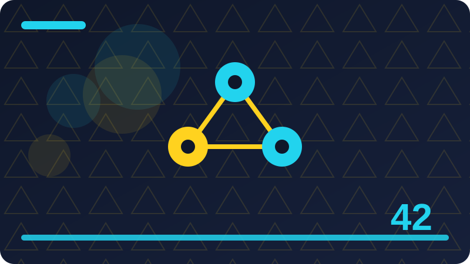

Chapter 42: AI and Learning: Study Helpers Done Right

Section 1: Learning Is Remembering and Understanding
When people talk about learning is remembering and understanding, they often jump straight to the most exciting claim and skip the quiet middle part where the real understanding lives. This section stays in that middle part on purpose. We will look at what is actually happening, what is not happening, and what a careful beginner should do next, using only plain language and a small program you can run on your own machine.
One key idea about learning is remembering and understanding is this: learning has two parts that are easy to confuse: remembering facts, and understanding ideas well enough to use them in new situations. Notice how this point connects to the sections around it. Ideas in this book build on each other, and a point that seems small here often becomes the key to a harder problem later.
One key idea about learning is remembering and understanding is this: a tool that only helps you remember may leave you helpless when a question is phrased differently, because understanding was never built. Notice how this point connects to the sections around it. Ideas in this book build on each other, and a point that seems small here often becomes the key to a harder problem later.
One key idea about learning is remembering and understanding is this: good study helpers therefore test both parts: they ask you to recall, and then they ask you to explain, apply, or compare. Notice how this point connects to the sections around it. Ideas in this book build on each other, and a point that seems small here often becomes the key to a harder problem later.
The small program below lets you try a toy version of this idea on your own machine, using only the Python standard library and your own words. Run it, read the output, then change one list item or one value and run it again, so you can see exactly what each part contributes to the result.
It also helps to set a clear finish line before you start. Decide what good enough looks like, how many rounds you will try, and when you will stop and ask a real person for feedback. Without a finish line, tools that can generate endlessly will keep you generating endlessly, and the work never gets finished, shared, or learned from. Limits are not the enemy of good work; they are part of it.
The main point to carry forward is a simple one: stay the person who decides. Use the tool to widen your choices, to draft faster, or to test an idea, and then bring your own judgment back to the centre. Tools change quickly, but that habit of deciding, checking, and owning the result will serve you in every tool you meet next. A helper that gives you the answer before you have struggled a little is stealing the very struggle that builds memory, so delay the answer on purpose.
flashcards = [("What is a variable?", "a named place to store a value"),
("What is a loop?", "a way to repeat steps"),
("What is a function?", "a named block of reusable steps")]
for question, answer in flashcards:
print("Q:", question)
print("A:", answer)Check: What is one mistake a beginner often makes with learning is remembering and understanding, and how would you avoid it?
Section 2: Study Helpers Done Right
It helps to begin study helpers done right with a simple question: what would a careful person do here without any machine at all? Once that human step is clear, the machine step becomes much easier to judge, because you can ask whether the tool is genuinely helping that human step or only making it look faster. Keep that question in mind as you read, and use it again at the end of the section.
One key idea about study helpers done right is this: a study helper done right makes you do the thinking, while a poor one does the thinking for you and leaves you with nothing. Try it with a tiny example of your own before you trust it on a bigger task. Small tests reveal big misunderstandings cheaply, and that cheap lesson is one of the best gifts of working locally.
One key idea about study helpers done right is this: the test is simple: after using the helper, can you answer questions without it, in your own words, a day later. That matters because it changes what you should do next, not just what you believe. When you can name the effect, you can plan around it instead of being surprised by it.
One key idea about study helpers done right is this: design your own study habits around that test, and any tool that fails it is entertainment, not education. Try it with a tiny example of your own before you trust it on a bigger task. Small tests reveal big misunderstandings cheaply, and that cheap lesson is one of the best gifts of working locally.
The small program below lets you try a toy version of this idea on your own machine, using only the Python standard library and your own words. Run it, read the output, then change one list item or one value and run it again, so you can see exactly what each part contributes to the result.
A good habit here is to work in small rounds. Make one attempt, look at it honestly, change one thing, and compare the new result with the old one. People who change five things at once often cannot tell which change helped, and they end up repeating the same mistake. Small rounds feel slower, but they teach you faster, and they leave you with notes you can actually reuse next time.
If one idea from this section sticks, let it be this: slow, honest checking beats fast, careless output every time. Speed feels impressive in the moment, but checked work is the work people trust, reuse, and remember. Build the checking habit now, while your projects are small, and it will already be strong when your projects grow. Write your own summary before you compare it with any tool summary, since the comparison teaches you far more than reading either version alone. Short, frequent study sessions beat one long cramming night, because memory strengthens when it is revisited after a little forgetting has happened.
import random
random.seed(4)
cards = ["loops", "lists", "functions", "dictionaries", "files"]
random.shuffle(cards)
print("Today's review order:", cards)Check: What did the code example in this section teach you about study helpers done right that the words alone did not?
Section 3: Reading Without Really Learning
This section is about reading without really learning. You do not need any special background to follow it, because we will build the idea one small step at a time, in plain words, and connect every new point to something you already understand from everyday life. The aim is not to memorise a definition. The aim is to end the section able to explain the idea to a friend, to spot it in a real tool, and to use it sensibly in your own small projects.
One key idea about reading without really learning is this: rereading feels productive because the words become familiar, but familiarity is not memory, and it fades quickly under exam pressure. Notice how this point connects to the sections around it. Ideas in this book build on each other, and a point that seems small here often becomes the key to a harder problem later.
One key idea about reading without really learning is this: the brain remembers what it works to retrieve, so reading the same page five times teaches less than recalling it once from memory. Notice how this point connects to the sections around it. Ideas in this book build on each other, and a point that seems small here often becomes the key to a harder problem later.
One key idea about reading without really learning is this: replace some rereading with recall: close the notes, write what you remember, then open the notes and fill the gaps. Notice how this point connects to the sections around it. Ideas in this book build on each other, and a point that seems small here often becomes the key to a harder problem later.
The small program below lets you try a toy version of this idea on your own machine, using only the Python standard library and your own words. Run it, read the output, then change one list item or one value and run it again, so you can see exactly what each part contributes to the result.
It also helps to set a clear finish line before you start. Decide what good enough looks like, how many rounds you will try, and when you will stop and ask a real person for feedback. Without a finish line, tools that can generate endlessly will keep you generating endlessly, and the work never gets finished, shared, or learned from. Limits are not the enemy of good work; they are part of it.
You do not need to master everything in this section today. Pick the one idea that felt most useful, try it in a tiny example of your own, and keep the rest as a map for later. Learning works best in layers: a first pass for the shape of the idea, a second pass when you actually need it, and real practice in between. Short, frequent study sessions beat one long cramming night, because memory strengthens when it is revisited after a little forgetting has happened.
def quiz_score(answers, correct):
score = sum(1 for a, c in zip(answers, correct) if a == c)
return score, len(correct)
print(quiz_score(["a", "b", "a"], ["a", "c", "a"]))Check: In your own words, what is the main idea of this section about reading without really learning, and where could you use it?
Section 4: The Power of Trying to Recall
When people talk about the power of trying to recall, they often jump straight to the most exciting claim and skip the quiet middle part where the real understanding lives. This section stays in that middle part on purpose. We will look at what is actually happening, what is not happening, and what a careful beginner should do next, using only plain language and a small program you can run on your own machine.
One key idea about the power of trying to recall is this: trying to recall an answer, even when you fail, strengthens the memory more than simply being shown the answer again. A beginner who understands this point will make better choices than an expert who ignores it, because most mistakes here come from rushing, not from lack of talent.
One key idea about the power of trying to recall is this: this is why self-testing beats highlighting: the effort of reaching for the answer is itself the learning, not a delay before it. If you ever feel unsure about this point, return to a concrete example rather than an abstract argument. One real, small, local example usually clears up more confusion than ten general claims.
One key idea about the power of trying to recall is this: build recall into every session by quizzing yourself before you check, and by welcoming wrong answers as useful information. Try it with a tiny example of your own before you trust it on a bigger task. Small tests reveal big misunderstandings cheaply, and that cheap lesson is one of the best gifts of working locally.
The small program below lets you try a toy version of this idea on your own machine, using only the Python standard library and your own words. Run it, read the output, then change one list item or one value and run it again, so you can see exactly what each part contributes to the result.
A good habit here is to work in small rounds. Make one attempt, look at it honestly, change one thing, and compare the new result with the old one. People who change five things at once often cannot tell which change helped, and they end up repeating the same mistake. Small rounds feel slower, but they teach you faster, and they leave you with notes you can actually reuse next time.
As you finish this section, ask yourself one honest question: could you explain this idea without the tool in front of you? If the answer is yes, you have genuinely learned something. If the answer is not yet, that is fine too: reread the example, run the code once more, and try the Check question in your own words before moving on. Keep your study notes in your own words, in files you control, so your learning record stays yours and stays readable long after any tool changes. When you get a question wrong, treat the mistake as a map: it points exactly at the idea you need to restudy, which is a gift, not a failure.
def summary_length(text):
words = text.split()
return len(words)
note = "A loop repeats steps until a condition changes. A function groups steps under one name."
print("Words:", summary_length(note))Check: What is one mistake a beginner often makes with the power of trying to recall, and how would you avoid it?
Section 5: Flashcards That Actually Work
It helps to begin flashcards that actually work with a simple question: what would a careful person do here without any machine at all? Once that human step is clear, the machine step becomes much easier to judge, because you can ask whether the tool is genuinely helping that human step or only making it look faster. Keep that question in mind as you read, and use it again at the end of the section.
One key idea about flashcards that actually work is this: a good flashcard asks one clear question, has one short answer, and forces you to answer before you look. If you ever feel unsure about this point, return to a concrete example rather than an abstract argument. One real, small, local example usually clears up more confusion than ten general claims.
One key idea about flashcards that actually work is this: bad flashcards ask vague questions or carry whole paragraphs on the back, which turns testing back into rereading. If you ever feel unsure about this point, return to a concrete example rather than an abstract argument. One real, small, local example usually clears up more confusion than ten general claims.
One key idea about flashcards that actually work is this: make your own cards in your own words, because writing the card is already a first round of learning. In practice, this is the difference between using a tool well and being used by it. The careful user notices the effect early, while the careless user only notices it after the work is already shared.
The small program below lets you try a toy version of this idea on your own machine, using only the Python standard library and your own words. Run it, read the output, then change one list item or one value and run it again, so you can see exactly what each part contributes to the result.
It also helps to set a clear finish line before you start. Decide what good enough looks like, how many rounds you will try, and when you will stop and ask a real person for feedback. Without a finish line, tools that can generate endlessly will keep you generating endlessly, and the work never gets finished, shared, or learned from. Limits are not the enemy of good work; they are part of it.
Keep this section as a reference, not a rulebook. Different projects will need different choices, and part of growing skill is learning when to follow a guideline and when to adapt it with good reason. What should not change is the core habit: know what you asked for, look carefully at what you got, and take responsibility for what you keep. When you get a question wrong, treat the mistake as a map: it points exactly at the idea you need to restudy, which is a gift, not a failure. Teach the idea to someone else, even an imaginary listener, because explaining exposes the gaps that silent rereading politely hides from you.
import datetime
today = datetime.date(2026, 10, 31)
plan = {0: "review notes", 3: "quiz yourself", 7: "quiz again", 14: "final check"}
for day, task in plan.items():
print(today + datetime.timedelta(days=day), "-", task)Check: What did the code example in this section teach you about flashcards that actually work that the words alone did not?
Section 6: Spacing Your Reviews
This section is about spacing your reviews. You do not need any special background to follow it, because we will build the idea one small step at a time, in plain words, and connect every new point to something you already understand from everyday life. The aim is not to memorise a definition. The aim is to end the section able to explain the idea to a friend, to spot it in a real tool, and to use it sensibly in your own small projects.
One key idea about spacing your reviews is this: spacing means reviewing material after a gap, not all at once, so that each review arrives just as forgetting begins. A beginner who understands this point will make better choices than an expert who ignores it, because most mistakes here come from rushing, not from lack of talent.
One key idea about spacing your reviews is this: a simple pattern is to review after one day, then three days, then a week, and to bring back sooner anything you missed. A beginner who understands this point will make better choices than an expert who ignores it, because most mistakes here come from rushing, not from lack of talent.
One key idea about spacing your reviews is this: a small local program can hold that schedule for you, and building one teaches you the method instead of hiding it inside an app. A beginner who understands this point will make better choices than an expert who ignores it, because most mistakes here come from rushing, not from lack of talent.
The small program below lets you try a toy version of this idea on your own machine, using only the Python standard library and your own words. Run it, read the output, then change one list item or one value and run it again, so you can see exactly what each part contributes to the result.
A good habit here is to work in small rounds. Make one attempt, look at it honestly, change one thing, and compare the new result with the old one. People who change five things at once often cannot tell which change helped, and they end up repeating the same mistake. Small rounds feel slower, but they teach you faster, and they leave you with notes you can actually reuse next time.
Before you move on, try the small code example in this section on your own machine, change one value, and run it again. Notice what stays the same and what changes, and write one sentence about what you learned. That single sentence is worth more than reading the section twice, because it proves the idea in your own words. Teach the idea to someone else, even an imaginary listener, because explaining exposes the gaps that silent rereading politely hides from you. Mix topics and mix question types in a session, since varied practice prepares you for varied real problems far better than repeating one easy drill.
def weak_topics(scores):
return [topic for topic, score in scores.items() if score < 70]
print(weak_topics({"loops": 90, "lists": 55, "files": 80}))Check: In your own words, what is the main idea of this section about spacing your reviews, and where could you use it?
Section 7: Mixing Topics on Purpose
When people talk about mixing topics on purpose, they often jump straight to the most exciting claim and skip the quiet middle part where the real understanding lives. This section stays in that middle part on purpose. We will look at what is actually happening, what is not happening, and what a careful beginner should do next, using only plain language and a small program you can run on your own machine.
One key idea about mixing topics on purpose is this: mixing topics feels harder than studying one topic at a time, but that difficulty is exactly what makes the learning last. Notice how this point connects to the sections around it. Ideas in this book build on each other, and a point that seems small here often becomes the key to a harder problem later.
One key idea about mixing topics on purpose is this: when topics are mixed, you must first recognise which idea a question needs, and that recognition is a skill exams and real work both demand. A beginner who understands this point will make better choices than an expert who ignores it, because most mistakes here come from rushing, not from lack of talent.
One key idea about mixing topics on purpose is this: mix your practice sets deliberately, and accept the lower early scores, because they predict higher later scores. In practice, this is the difference between using a tool well and being used by it. The careful user notices the effect early, while the careless user only notices it after the work is already shared.
The small program below lets you try a toy version of this idea on your own machine, using only the Python standard library and your own words. Run it, read the output, then change one list item or one value and run it again, so you can see exactly what each part contributes to the result.
It also helps to set a clear finish line before you start. Decide what good enough looks like, how many rounds you will try, and when you will stop and ask a real person for feedback. Without a finish line, tools that can generate endlessly will keep you generating endlessly, and the work never gets finished, shared, or learned from. Limits are not the enemy of good work; they are part of it.
The main point to carry forward is a simple one: stay the person who decides. Use the tool to widen your choices, to draft faster, or to test an idea, and then bring your own judgment back to the centre. Tools change quickly, but that habit of deciding, checking, and owning the result will serve you in every tool you meet next. Mix topics and mix question types in a session, since varied practice prepares you for varied real problems far better than repeating one easy drill. Sleep, water, and breaks are part of studying, not interruptions to it, because a tired brain stores less no matter how good the tool is.
notes = ["loops repeat steps", "functions group steps", "lists hold many items"]
for note in notes:
print("-", note, "| words:", len(note.split()))Check: What is one mistake a beginner often makes with mixing topics on purpose, and how would you avoid it?
Section 8: Summarising in Your Own Words
It helps to begin summarising in your own words with a simple question: what would a careful person do here without any machine at all? Once that human step is clear, the machine step becomes much easier to judge, because you can ask whether the tool is genuinely helping that human step or only making it look faster. Keep that question in mind as you read, and use it again at the end of the section.
One key idea about summarising in your own words is this: a summary in your own words proves understanding, because you cannot summarise what you have not grasped, except by copying. Try it with a tiny example of your own before you trust it on a bigger task. Small tests reveal big misunderstandings cheaply, and that cheap lesson is one of the best gifts of working locally.
One key idea about summarising in your own words is this: write the summary with the source closed, then compare it with the source and correct only what you got wrong or missed. A beginner who understands this point will make better choices than an expert who ignores it, because most mistakes here come from rushing, not from lack of talent.
One key idea about summarising in your own words is this: a tool summary can serve as a comparison after your own attempt, but never as a replacement for that attempt. That matters because it changes what you should do next, not just what you believe. When you can name the effect, you can plan around it instead of being surprised by it.
The small program below lets you try a toy version of this idea on your own machine, using only the Python standard library and your own words. Run it, read the output, then change one list item or one value and run it again, so you can see exactly what each part contributes to the result.
A good habit here is to work in small rounds. Make one attempt, look at it honestly, change one thing, and compare the new result with the old one. People who change five things at once often cannot tell which change helped, and they end up repeating the same mistake. Small rounds feel slower, but they teach you faster, and they leave you with notes you can actually reuse next time.
If one idea from this section sticks, let it be this: slow, honest checking beats fast, careless output every time. Speed feels impressive in the moment, but checked work is the work people trust, reuse, and remember. Build the checking habit now, while your projects are small, and it will already be strong when your projects grow. Sleep, water, and breaks are part of studying, not interruptions to it, because a tired brain stores less no matter how good the tool is. Set a clear study goal before you open any helper, such as being able to answer five questions without notes, and stop when you can honestly do it.
import random
random.seed(8)
questions = ["Explain a loop in one sentence.",
"Give an example of a list.",
"When would you use a function?"]
print(random.choice(questions))Check: What did the code example in this section teach you about summarising in your own words that the words alone did not?
Section 9: Using AI Summaries Honestly
This section is about using ai summaries honestly. You do not need any special background to follow it, because we will build the idea one small step at a time, in plain words, and connect every new point to something you already understand from everyday life. The aim is not to memorise a definition. The aim is to end the section able to explain the idea to a friend, to spot it in a real tool, and to use it sensibly in your own small projects.
One key idea about using ai summaries honestly is this: an AI summary is a starting point for checking, not a finished piece of learning, because reading it is not the same as knowing it. In practice, this is the difference between using a tool well and being used by it. The careful user notices the effect early, while the careless user only notices it after the work is already shared.
One key idea about using ai summaries honestly is this: compare a tool summary with your own notes line by line, and ask which details it dropped, softened, or invented. Notice how this point connects to the sections around it. Ideas in this book build on each other, and a point that seems small here often becomes the key to a harder problem later.
One key idea about using ai summaries honestly is this: if you submit a tool summary as your own work, you have skipped the learning and misrepresented the authorship, both of which cost you later. If you ever feel unsure about this point, return to a concrete example rather than an abstract argument. One real, small, local example usually clears up more confusion than ten general claims.
The small program below lets you try a toy version of this idea on your own machine, using only the Python standard library and your own words. Run it, read the output, then change one list item or one value and run it again, so you can see exactly what each part contributes to the result.
It also helps to set a clear finish line before you start. Decide what good enough looks like, how many rounds you will try, and when you will stop and ask a real person for feedback. Without a finish line, tools that can generate endlessly will keep you generating endlessly, and the work never gets finished, shared, or learned from. Limits are not the enemy of good work; they are part of it.
You do not need to master everything in this section today. Pick the one idea that felt most useful, try it in a tiny example of your own, and keep the rest as a map for later. Learning works best in layers: a first pass for the shape of the idea, a second pass when you actually need it, and real practice in between. Set a clear study goal before you open any helper, such as being able to answer five questions without notes, and stop when you can honestly do it.
def study_plan(topics, minutes_each):
total = 0
for topic in topics:
print(topic, "-", minutes_each, "minutes")
total += minutes_each
print("Total:", total, "minutes")
study_plan(["loops", "lists", "functions"], 20)Check: In your own words, what is the main idea of this section about using ai summaries honestly, and where could you use it?
Section 10: Homework Help Versus Homework Cheating
When people talk about homework help versus homework cheating, they often jump straight to the most exciting claim and skip the quiet middle part where the real understanding lives. This section stays in that middle part on purpose. We will look at what is actually happening, what is not happening, and what a careful beginner should do next, using only plain language and a small program you can run on your own machine.
One key idea about homework help versus homework cheating is this: help explains, asks questions, and leaves you able to do the next problem alone, while cheating hands you a finished answer you cannot reproduce. That matters because it changes what you should do next, not just what you believe. When you can name the effect, you can plan around it instead of being surprised by it.
One key idea about homework help versus homework cheating is this: the honest question to ask yourself is whether you could solve a similar problem tomorrow without the helper in front of you. In practice, this is the difference between using a tool well and being used by it. The careful user notices the effect early, while the careless user only notices it after the work is already shared.
One key idea about homework help versus homework cheating is this: schools set these rules to protect your learning, so read them, follow them, and ask a teacher when a boundary is unclear. In practice, this is the difference between using a tool well and being used by it. The careful user notices the effect early, while the careless user only notices it after the work is already shared.
The small program below lets you try a toy version of this idea on your own machine, using only the Python standard library and your own words. Run it, read the output, then change one list item or one value and run it again, so you can see exactly what each part contributes to the result.
A good habit here is to work in small rounds. Make one attempt, look at it honestly, change one thing, and compare the new result with the old one. People who change five things at once often cannot tell which change helped, and they end up repeating the same mistake. Small rounds feel slower, but they teach you faster, and they leave you with notes you can actually reuse next time.
As you finish this section, ask yourself one honest question: could you explain this idea without the tool in front of you? If the answer is yes, you have genuinely learned something. If the answer is not yet, that is fine too: reread the example, run the code once more, and try the Check question in your own words before moving on. Check every fact a tool gives you against your course material, because a fluent explanation can still be wrong in exactly the detail an exam tests.
def check_answer(user, correct):
if user.strip().lower() == correct.lower():
return "Correct. Now explain why, in your own words."
return "Not yet. Reread the note, then try again."
print(check_answer("a named block", "a named block"))Check: What is one mistake a beginner often makes with homework help versus homework cheating, and how would you avoid it?
Section 11: Asking for Hints, Not Answers
It helps to begin asking for hints, not answers with a simple question: what would a careful person do here without any machine at all? Once that human step is clear, the machine step becomes much easier to judge, because you can ask whether the tool is genuinely helping that human step or only making it look faster. Keep that question in mind as you read, and use it again at the end of the section.
One key idea about asking for hints, not answers is this: a hint points at the next step without giving it away, such as reminding you which idea applies or which part to reread. A beginner who understands this point will make better choices than an expert who ignores it, because most mistakes here come from rushing, not from lack of talent.
One key idea about asking for hints, not answers is this: asking for hints trains the skill you actually need, which is getting unstuck, while asking for answers trains only copying. Try it with a tiny example of your own before you trust it on a bigger task. Small tests reveal big misunderstandings cheaply, and that cheap lesson is one of the best gifts of working locally.
One key idea about asking for hints, not answers is this: when you use a helper, ask it to explain the idea and to quiz you, and refuse the finished answer until you have genuinely tried. If you ever feel unsure about this point, return to a concrete example rather than an abstract argument. One real, small, local example usually clears up more confusion than ten general claims.
The small program below lets you try a toy version of this idea on your own machine, using only the Python standard library and your own words. Run it, read the output, then change one list item or one value and run it again, so you can see exactly what each part contributes to the result.
It also helps to set a clear finish line before you start. Decide what good enough looks like, how many rounds you will try, and when you will stop and ask a real person for feedback. Without a finish line, tools that can generate endlessly will keep you generating endlessly, and the work never gets finished, shared, or learned from. Limits are not the enemy of good work; they are part of it.
Keep this section as a reference, not a rulebook. Different projects will need different choices, and part of growing skill is learning when to follow a guideline and when to adapt it with good reason. What should not change is the core habit: know what you asked for, look carefully at what you got, and take responsibility for what you keep. Your own handwritten or typed notes, mistakes included, are a better study record than a perfect machine summary you never truly read. If a helper makes studying feel effortless, be suspicious: real learning usually involves some effort, and effortless reading fades fastest.
flashcards = [("What is a variable?", "a named place to store a value"),
("What is a loop?", "a way to repeat steps"),
("What is a function?", "a named block of reusable steps")]
for question, answer in flashcards:
print("Q:", question)
print("A:", answer)Check: What did the code example in this section teach you about asking for hints, not answers that the words alone did not?
Section 12: Checking Answers Without Copying Them
This section is about checking answers without copying them. You do not need any special background to follow it, because we will build the idea one small step at a time, in plain words, and connect every new point to something you already understand from everyday life. The aim is not to memorise a definition. The aim is to end the section able to explain the idea to a friend, to spot it in a real tool, and to use it sensibly in your own small projects.
One key idea about checking answers without copying them is this: checking is a legitimate study step when it happens after your own attempt, because it corrects errors before they harden into habits. In practice, this is the difference between using a tool well and being used by it. The careful user notices the effect early, while the careless user only notices it after the work is already shared.
One key idea about checking answers without copying them is this: checking before attempting is not checking at all: it is copying with extra steps, and it teaches almost nothing. In practice, this is the difference between using a tool well and being used by it. The careful user notices the effect early, while the careless user only notices it after the work is already shared.
One key idea about checking answers without copying them is this: a good routine is attempt, check, correct, and re-attempt later, so the corrected version is the one your memory keeps. Notice how this point connects to the sections around it. Ideas in this book build on each other, and a point that seems small here often becomes the key to a harder problem later.
The small program below lets you try a toy version of this idea on your own machine, using only the Python standard library and your own words. Run it, read the output, then change one list item or one value and run it again, so you can see exactly what each part contributes to the result.
A good habit here is to work in small rounds. Make one attempt, look at it honestly, change one thing, and compare the new result with the old one. People who change five things at once often cannot tell which change helped, and they end up repeating the same mistake. Small rounds feel slower, but they teach you faster, and they leave you with notes you can actually reuse next time.
Before you move on, try the small code example in this section on your own machine, change one value, and run it again. Notice what stays the same and what changes, and write one sentence about what you learned. That single sentence is worth more than reading the section twice, because it proves the idea in your own words. If a helper makes studying feel effortless, be suspicious: real learning usually involves some effort, and effortless reading fades fastest.
import random
random.seed(4)
cards = ["loops", "lists", "functions", "dictionaries", "files"]
random.shuffle(cards)
print("Today's review order:", cards)Check: In your own words, what is the main idea of this section about checking answers without copying them, and where could you use it?
Section 13: Explaining Ideas to Learn Them
When people talk about explaining ideas to learn them, they often jump straight to the most exciting claim and skip the quiet middle part where the real understanding lives. This section stays in that middle part on purpose. We will look at what is actually happening, what is not happening, and what a careful beginner should do next, using only plain language and a small program you can run on your own machine.
One key idea about explaining ideas to learn them is this: explaining an idea in plain words forces you to organise it, choose examples, and notice the parts you only half understand. That matters because it changes what you should do next, not just what you believe. When you can name the effect, you can plan around it instead of being surprised by it.
One key idea about explaining ideas to learn them is this: the classic test is to explain to a beginner: if you need jargon to hide behind, the understanding is not yet solid. In practice, this is the difference between using a tool well and being used by it. The careful user notices the effect early, while the careless user only notices it after the work is already shared.
One key idea about explaining ideas to learn them is this: practise explaining aloud, in writing, and with a small example, because each form reveals a different gap. In practice, this is the difference between using a tool well and being used by it. The careful user notices the effect early, while the careless user only notices it after the work is already shared.
The small program below lets you try a toy version of this idea on your own machine, using only the Python standard library and your own words. Run it, read the output, then change one list item or one value and run it again, so you can see exactly what each part contributes to the result.
It also helps to set a clear finish line before you start. Decide what good enough looks like, how many rounds you will try, and when you will stop and ask a real person for feedback. Without a finish line, tools that can generate endlessly will keep you generating endlessly, and the work never gets finished, shared, or learned from. Limits are not the enemy of good work; they are part of it.
The main point to carry forward is a simple one: stay the person who decides. Use the tool to widen your choices, to draft faster, or to test an idea, and then bring your own judgment back to the centre. Tools change quickly, but that habit of deciding, checking, and owning the result will serve you in every tool you meet next. Review yesterday's material before starting today's, because that small habit compounds into strong memory over a term. Keep a list of questions you cannot yet answer, and return to it daily, since that list is the most honest picture of what to study next.
def quiz_score(answers, correct):
score = sum(1 for a, c in zip(answers, correct) if a == c)
return score, len(correct)
print(quiz_score(["a", "b", "a"], ["a", "c", "a"]))Check: What is one mistake a beginner often makes with explaining ideas to learn them, and how would you avoid it?
Section 14: Worked Examples and Your Own Turn
It helps to begin worked examples and your own turn with a simple question: what would a careful person do here without any machine at all? Once that human step is clear, the machine step becomes much easier to judge, because you can ask whether the tool is genuinely helping that human step or only making it look faster. Keep that question in mind as you read, and use it again at the end of the section.
One key idea about worked examples and your own turn is this: a worked example shows one solved problem step by step, and its value comes when you then solve a similar problem alone. If you ever feel unsure about this point, return to a concrete example rather than an abstract argument. One real, small, local example usually clears up more confusion than ten general claims.
One key idea about worked examples and your own turn is this: watching examples without trying your own turn creates the illusion of skill, which collapses on the first real question. Try it with a tiny example of your own before you trust it on a bigger task. Small tests reveal big misunderstandings cheaply, and that cheap lesson is one of the best gifts of working locally.
One key idea about worked examples and your own turn is this: for every example you study, do one problem yourself before moving on, and compare your steps, not just your final answer. In practice, this is the difference between using a tool well and being used by it. The careful user notices the effect early, while the careless user only notices it after the work is already shared.
The small program below lets you try a toy version of this idea on your own machine, using only the Python standard library and your own words. Run it, read the output, then change one list item or one value and run it again, so you can see exactly what each part contributes to the result.
A good habit here is to work in small rounds. Make one attempt, look at it honestly, change one thing, and compare the new result with the old one. People who change five things at once often cannot tell which change helped, and they end up repeating the same mistake. Small rounds feel slower, but they teach you faster, and they leave you with notes you can actually reuse next time.
If one idea from this section sticks, let it be this: slow, honest checking beats fast, careless output every time. Speed feels impressive in the moment, but checked work is the work people trust, reuse, and remember. Build the checking habit now, while your projects are small, and it will already be strong when your projects grow. Keep a list of questions you cannot yet answer, and return to it daily, since that list is the most honest picture of what to study next.
def summary_length(text):
words = text.split()
return len(words)
note = "A loop repeats steps until a condition changes. A function groups steps under one name."
print("Words:", summary_length(note))Check: What did the code example in this section teach you about worked examples and your own turn that the words alone did not?
Section 15: Making Your Own Practice Questions
This section is about making your own practice questions. You do not need any special background to follow it, because we will build the idea one small step at a time, in plain words, and connect every new point to something you already understand from everyday life. The aim is not to memorise a definition. The aim is to end the section able to explain the idea to a friend, to spot it in a real tool, and to use it sensibly in your own small projects.
One key idea about making your own practice questions is this: writing your own questions is powerful study, because you must decide what matters, how it could be tested, and what a good answer looks like. That matters because it changes what you should do next, not just what you believe. When you can name the effect, you can plan around it instead of being surprised by it.
One key idea about making your own practice questions is this: turn each section of your notes into two questions: one that asks for recall, and one that asks for explanation or application. That matters because it changes what you should do next, not just what you believe. When you can name the effect, you can plan around it instead of being surprised by it.
One key idea about making your own practice questions is this: swap questions with a study partner when you can, because answering someone else's question removes the comfort of your own phrasing. Try it with a tiny example of your own before you trust it on a bigger task. Small tests reveal big misunderstandings cheaply, and that cheap lesson is one of the best gifts of working locally.
The small program below lets you try a toy version of this idea on your own machine, using only the Python standard library and your own words. Run it, read the output, then change one list item or one value and run it again, so you can see exactly what each part contributes to the result.
It also helps to set a clear finish line before you start. Decide what good enough looks like, how many rounds you will try, and when you will stop and ask a real person for feedback. Without a finish line, tools that can generate endlessly will keep you generating endlessly, and the work never gets finished, shared, or learned from. Limits are not the enemy of good work; they are part of it.
You do not need to master everything in this section today. Pick the one idea that felt most useful, try it in a tiny example of your own, and keep the rest as a map for later. Learning works best in layers: a first pass for the shape of the idea, a second pass when you actually need it, and real practice in between. A study helper should quiz you, not perform for you: the person doing the answering should be you, as often as possible.
import datetime
today = datetime.date(2026, 10, 31)
plan = {0: "review notes", 3: "quiz yourself", 7: "quiz again", 14: "final check"}
for day, task in plan.items():
print(today + datetime.timedelta(days=day), "-", task)Check: In your own words, what is the main idea of this section about making your own practice questions, and where could you use it?
Section 16: Quizzing Yourself With a Local Toy
When people talk about quizzing yourself with a local toy, they often jump straight to the most exciting claim and skip the quiet middle part where the real understanding lives. This section stays in that middle part on purpose. We will look at what is actually happening, what is not happening, and what a careful beginner should do next, using only plain language and a small program you can run on your own machine.
One key idea about quizzing yourself with a local toy is this: a local quiz toy can shuffle your questions, hide the answers until you respond, and keep score without any outside service. Try it with a tiny example of your own before you trust it on a bigger task. Small tests reveal big misunderstandings cheaply, and that cheap lesson is one of the best gifts of working locally.
One key idea about quizzing yourself with a local toy is this: building the toy yourself adds a second layer of learning, because you must organise the material clearly enough for a program to use it. In practice, this is the difference between using a tool well and being used by it. The careful user notices the effect early, while the careless user only notices it after the work is already shared.
One key idea about quizzing yourself with a local toy is this: the toy in this chapter uses only the standard library and your own question files, so it stays fully under your control. That matters because it changes what you should do next, not just what you believe. When you can name the effect, you can plan around it instead of being surprised by it.
The small program below lets you try a toy version of this idea on your own machine, using only the Python standard library and your own words. Run it, read the output, then change one list item or one value and run it again, so you can see exactly what each part contributes to the result.
A good habit here is to work in small rounds. Make one attempt, look at it honestly, change one thing, and compare the new result with the old one. People who change five things at once often cannot tell which change helped, and they end up repeating the same mistake. Small rounds feel slower, but they teach you faster, and they leave you with notes you can actually reuse next time.
As you finish this section, ask yourself one honest question: could you explain this idea without the tool in front of you? If the answer is yes, you have genuinely learned something. If the answer is not yet, that is fine too: reread the example, run the code once more, and try the Check question in your own words before moving on. Break big topics into small, testable pieces, because a piece you can explain in two sentences is a piece you actually understand.
def weak_topics(scores):
return [topic for topic, score in scores.items() if score < 70]
print(weak_topics({"loops": 90, "lists": 55, "files": 80}))Check: What is one mistake a beginner often makes with quizzing yourself with a local toy, and how would you avoid it?
Section 17: Tracking What You Know and What You Miss
It helps to begin tracking what you know and what you miss with a simple question: what would a careful person do here without any machine at all? Once that human step is clear, the machine step becomes much easier to judge, because you can ask whether the tool is genuinely helping that human step or only making it look faster. Keep that question in mind as you read, and use it again at the end of the section.
One key idea about tracking what you know and what you miss is this: tracking turns vague worry into a clear map: the topics you miss repeatedly are the topics to study next, not the ones you enjoy revisiting. Notice how this point connects to the sections around it. Ideas in this book build on each other, and a point that seems small here often becomes the key to a harder problem later.
One key idea about tracking what you know and what you miss is this: keep a simple record of quiz scores by topic, and let the weakest topics earn the most review time in your next session. If you ever feel unsure about this point, return to a concrete example rather than an abstract argument. One real, small, local example usually clears up more confusion than ten general claims.
One key idea about tracking what you know and what you miss is this: review the record weekly, and celebrate when a weak topic climbs, because that climb is visible proof that your method works. In practice, this is the difference between using a tool well and being used by it. The careful user notices the effect early, while the careless user only notices it after the work is already shared.
The small program below lets you try a toy version of this idea on your own machine, using only the Python standard library and your own words. Run it, read the output, then change one list item or one value and run it again, so you can see exactly what each part contributes to the result.
It also helps to set a clear finish line before you start. Decide what good enough looks like, how many rounds you will try, and when you will stop and ask a real person for feedback. Without a finish line, tools that can generate endlessly will keep you generating endlessly, and the work never gets finished, shared, or learned from. Limits are not the enemy of good work; they are part of it.
Keep this section as a reference, not a rulebook. Different projects will need different choices, and part of growing skill is learning when to follow a guideline and when to adapt it with good reason. What should not change is the core habit: know what you asked for, look carefully at what you got, and take responsibility for what you keep. Use local toy programs to practise quizzing and scheduling, so you understand the method itself instead of depending on one particular app.
notes = ["loops repeat steps", "functions group steps", "lists hold many items"]
for note in notes:
print("-", note, "| words:", len(note.split()))Check: What did the code example in this section teach you about tracking what you know and what you miss that the words alone did not?
Section 18: Study Plans That Survive Real Life
This section is about study plans that survive real life. You do not need any special background to follow it, because we will build the idea one small step at a time, in plain words, and connect every new point to something you already understand from everyday life. The aim is not to memorise a definition. The aim is to end the section able to explain the idea to a friend, to spot it in a real tool, and to use it sensibly in your own small projects.
One key idea about study plans that survive real life is this: a study plan survives real life when it is small, specific, and forgiving: a named topic, a set time, and a clear finish line. If you ever feel unsure about this point, return to a concrete example rather than an abstract argument. One real, small, local example usually clears up more confusion than ten general claims.
One key idea about study plans that survive real life is this: grand plans fail because one missed day feels like total failure, while a small plan lets you restart the next day without drama. If you ever feel unsure about this point, return to a concrete example rather than an abstract argument. One real, small, local example usually clears up more confusion than ten general claims.
One key idea about study plans that survive real life is this: plan in weeks, not in wishes, and write the plan where you will actually see it each morning. A beginner who understands this point will make better choices than an expert who ignores it, because most mistakes here come from rushing, not from lack of talent.
The small program below lets you try a toy version of this idea on your own machine, using only the Python standard library and your own words. Run it, read the output, then change one list item or one value and run it again, so you can see exactly what each part contributes to the result.
A good habit here is to work in small rounds. Make one attempt, look at it honestly, change one thing, and compare the new result with the old one. People who change five things at once often cannot tell which change helped, and they end up repeating the same mistake. Small rounds feel slower, but they teach you faster, and they leave you with notes you can actually reuse next time.
Before you move on, try the small code example in this section on your own machine, change one value, and run it again. Notice what stays the same and what changes, and write one sentence about what you learned. That single sentence is worth more than reading the section twice, because it proves the idea in your own words. When you finish a session, write one sentence about what you learned and one question you still have, and start tomorrow from that question.
import random
random.seed(8)
questions = ["Explain a loop in one sentence.",
"Give an example of a list.",
"When would you use a function?"]
print(random.choice(questions))Check: In your own words, what is the main idea of this section about study plans that survive real life, and where could you use it?
Section 19: Short Sessions, Honest Breaks
When people talk about short sessions, honest breaks, they often jump straight to the most exciting claim and skip the quiet middle part where the real understanding lives. This section stays in that middle part on purpose. We will look at what is actually happening, what is not happening, and what a careful beginner should do next, using only plain language and a small program you can run on your own machine.
One key idea about short sessions, honest breaks is this: short, focused sessions with real breaks beat long, distracted ones, because attention is a limited resource that breaks restore. If you ever feel unsure about this point, return to a concrete example rather than an abstract argument. One real, small, local example usually clears up more confusion than ten general claims.
One key idea about short sessions, honest breaks is this: a useful rhythm is twenty-five minutes of real work, then a five-minute break away from the screen, repeated a few times. That matters because it changes what you should do next, not just what you believe. When you can name the effect, you can plan around it instead of being surprised by it.
One key idea about short sessions, honest breaks is this: during a break, do not swap studying for scrolling, because a break that tires your eyes and attention is not a break at all. In practice, this is the difference between using a tool well and being used by it. The careful user notices the effect early, while the careless user only notices it after the work is already shared.
The small program below lets you try a toy version of this idea on your own machine, using only the Python standard library and your own words. Run it, read the output, then change one list item or one value and run it again, so you can see exactly what each part contributes to the result.
It also helps to set a clear finish line before you start. Decide what good enough looks like, how many rounds you will try, and when you will stop and ask a real person for feedback. Without a finish line, tools that can generate endlessly will keep you generating endlessly, and the work never gets finished, shared, or learned from. Limits are not the enemy of good work; they are part of it.
The main point to carry forward is a simple one: stay the person who decides. Use the tool to widen your choices, to draft faster, or to test an idea, and then bring your own judgment back to the centre. Tools change quickly, but that habit of deciding, checking, and owning the result will serve you in every tool you meet next. Honest study habits protect your future self: the knowledge you truly earn now is the knowledge you can use when no helper is available. Studying with a tool should leave you knowing more when the tool is closed, because that closed-book knowledge is the only kind that counts in an exam or a real task.
def study_plan(topics, minutes_each):
total = 0
for topic in topics:
print(topic, "-", minutes_each, "minutes")
total += minutes_each
print("Total:", total, "minutes")
study_plan(["loops", "lists", "functions"], 20)Check: What is one mistake a beginner often makes with short sessions, honest breaks, and how would you avoid it?
Section 20: Notes You Can Actually Revisit
It helps to begin notes you can actually revisit with a simple question: what would a careful person do here without any machine at all? Once that human step is clear, the machine step becomes much easier to judge, because you can ask whether the tool is genuinely helping that human step or only making it look faster. Keep that question in mind as you read, and use it again at the end of the section.
One key idea about notes you can actually revisit is this: notes are only useful if you can find them, read them, and trust them later, which means clear headings, short lines, and your own words. Notice how this point connects to the sections around it. Ideas in this book build on each other, and a point that seems small here often becomes the key to a harder problem later.
One key idea about notes you can actually revisit is this: a note that is a wall of copied text will never be revisited, because revisiting it feels like starting over. Try it with a tiny example of your own before you trust it on a bigger task. Small tests reveal big misunderstandings cheaply, and that cheap lesson is one of the best gifts of working locally.
One key idea about notes you can actually revisit is this: organise notes by topic and date, keep them in plain text files you control, and review them on the spacing schedule in this chapter. That matters because it changes what you should do next, not just what you believe. When you can name the effect, you can plan around it instead of being surprised by it.
The small program below lets you try a toy version of this idea on your own machine, using only the Python standard library and your own words. Run it, read the output, then change one list item or one value and run it again, so you can see exactly what each part contributes to the result.
A good habit here is to work in small rounds. Make one attempt, look at it honestly, change one thing, and compare the new result with the old one. People who change five things at once often cannot tell which change helped, and they end up repeating the same mistake. Small rounds feel slower, but they teach you faster, and they leave you with notes you can actually reuse next time.
If one idea from this section sticks, let it be this: slow, honest checking beats fast, careless output every time. Speed feels impressive in the moment, but checked work is the work people trust, reuse, and remember. Build the checking habit now, while your projects are small, and it will already be strong when your projects grow. Studying with a tool should leave you knowing more when the tool is closed, because that closed-book knowledge is the only kind that counts in an exam or a real task.
def check_answer(user, correct):
if user.strip().lower() == correct.lower():
return "Correct. Now explain why, in your own words."
return "Not yet. Reread the note, then try again."
print(check_answer("a named block", "a named block"))Check: What did the code example in this section teach you about notes you can actually revisit that the words alone did not?
Section 21: Organising Notes With a Local Search Tool
This section is about organising notes with a local search tool. You do not need any special background to follow it, because we will build the idea one small step at a time, in plain words, and connect every new point to something you already understand from everyday life. The aim is not to memorise a definition. The aim is to end the section able to explain the idea to a friend, to spot it in a real tool, and to use it sensibly in your own small projects.
One key idea about organising notes with a local search tool is this: a local search tool over your own notes lets you find an idea in seconds, which turns a pile of files into a usable library. That matters because it changes what you should do next, not just what you believe. When you can name the effect, you can plan around it instead of being surprised by it.
One key idea about organising notes with a local search tool is this: searching your own words also reminds you of connections between topics, because the same idea often appears in several notes. If you ever feel unsure about this point, return to a concrete example rather than an abstract argument. One real, small, local example usually clears up more confusion than ten general claims.
One key idea about organising notes with a local search tool is this: the search tool in this book works only over files you wrote, so nothing private leaves your machine while you study. If you ever feel unsure about this point, return to a concrete example rather than an abstract argument. One real, small, local example usually clears up more confusion than ten general claims.
The small program below lets you try a toy version of this idea on your own machine, using only the Python standard library and your own words. Run it, read the output, then change one list item or one value and run it again, so you can see exactly what each part contributes to the result.
It also helps to set a clear finish line before you start. Decide what good enough looks like, how many rounds you will try, and when you will stop and ask a real person for feedback. Without a finish line, tools that can generate endlessly will keep you generating endlessly, and the work never gets finished, shared, or learned from. Limits are not the enemy of good work; they are part of it.
You do not need to master everything in this section today. Pick the one idea that felt most useful, try it in a tiny example of your own, and keep the rest as a map for later. Learning works best in layers: a first pass for the shape of the idea, a second pass when you actually need it, and real practice in between. A helper that gives you the answer before you have struggled a little is stealing the very struggle that builds memory, so delay the answer on purpose.
flashcards = [("What is a variable?", "a named place to store a value"),
("What is a loop?", "a way to repeat steps"),
("What is a function?", "a named block of reusable steps")]
for question, answer in flashcards:
print("Q:", question)
print("A:", answer)Check: In your own words, what is the main idea of this section about organising notes with a local search tool, and where could you use it?
Section 22: When a Tool Answer Looks Confident but Wrong
When people talk about when a tool answer looks confident but wrong, they often jump straight to the most exciting claim and skip the quiet middle part where the real understanding lives. This section stays in that middle part on purpose. We will look at what is actually happening, what is not happening, and what a careful beginner should do next, using only plain language and a small program you can run on your own machine.
One key idea about when a tool answer looks confident but wrong is this: a confident tone is not evidence, and a fluent explanation can be wrong in exactly the detail that matters most for your subject. A beginner who understands this point will make better choices than an expert who ignores it, because most mistakes here come from rushing, not from lack of talent.
One key idea about when a tool answer looks confident but wrong is this: check tool answers against your course material, your textbook, or a trusted reference, especially for dates, formulas, definitions, and names. In practice, this is the difference between using a tool well and being used by it. The careful user notices the effect early, while the careless user only notices it after the work is already shared.
One key idea about when a tool answer looks confident but wrong is this: when a tool answer and your material disagree, trust the material, note the disagreement, and ask a teacher about it. A beginner who understands this point will make better choices than an expert who ignores it, because most mistakes here come from rushing, not from lack of talent.
The small program below lets you try a toy version of this idea on your own machine, using only the Python standard library and your own words. Run it, read the output, then change one list item or one value and run it again, so you can see exactly what each part contributes to the result.
A good habit here is to work in small rounds. Make one attempt, look at it honestly, change one thing, and compare the new result with the old one. People who change five things at once often cannot tell which change helped, and they end up repeating the same mistake. Small rounds feel slower, but they teach you faster, and they leave you with notes you can actually reuse next time.
As you finish this section, ask yourself one honest question: could you explain this idea without the tool in front of you? If the answer is yes, you have genuinely learned something. If the answer is not yet, that is fine too: reread the example, run the code once more, and try the Check question in your own words before moving on. Write your own summary before you compare it with any tool summary, since the comparison teaches you far more than reading either version alone. Short, frequent study sessions beat one long cramming night, because memory strengthens when it is revisited after a little forgetting has happened.
import random
random.seed(4)
cards = ["loops", "lists", "functions", "dictionaries", "files"]
random.shuffle(cards)
print("Today's review order:", cards)Check: What is one mistake a beginner often makes with when a tool answer looks confident but wrong, and how would you avoid it?
Section 23: Facts, Opinions and Tool Guesses
It helps to begin facts, opinions and tool guesses with a simple question: what would a careful person do here without any machine at all? Once that human step is clear, the machine step becomes much easier to judge, because you can ask whether the tool is genuinely helping that human step or only making it look faster. Keep that question in mind as you read, and use it again at the end of the section.
One key idea about facts, opinions and tool guesses is this: a fact can be checked, an opinion can be argued, and a tool guess is neither: it is a plausible-sounding sentence that may be either. Try it with a tiny example of your own before you trust it on a bigger task. Small tests reveal big misunderstandings cheaply, and that cheap lesson is one of the best gifts of working locally.
One key idea about facts, opinions and tool guesses is this: learn to label what you read: is this a verified fact, a reasonable opinion, or a guess that still needs checking. If you ever feel unsure about this point, return to a concrete example rather than an abstract argument. One real, small, local example usually clears up more confusion than ten general claims.
One key idea about facts, opinions and tool guesses is this: that labelling habit protects you in every subject, because it stops a smooth guess from quietly becoming a false memory. Try it with a tiny example of your own before you trust it on a bigger task. Small tests reveal big misunderstandings cheaply, and that cheap lesson is one of the best gifts of working locally.
The small program below lets you try a toy version of this idea on your own machine, using only the Python standard library and your own words. Run it, read the output, then change one list item or one value and run it again, so you can see exactly what each part contributes to the result.
It also helps to set a clear finish line before you start. Decide what good enough looks like, how many rounds you will try, and when you will stop and ask a real person for feedback. Without a finish line, tools that can generate endlessly will keep you generating endlessly, and the work never gets finished, shared, or learned from. Limits are not the enemy of good work; they are part of it.
Keep this section as a reference, not a rulebook. Different projects will need different choices, and part of growing skill is learning when to follow a guideline and when to adapt it with good reason. What should not change is the core habit: know what you asked for, look carefully at what you got, and take responsibility for what you keep. Short, frequent study sessions beat one long cramming night, because memory strengthens when it is revisited after a little forgetting has happened.
def quiz_score(answers, correct):
score = sum(1 for a, c in zip(answers, correct) if a == c)
return score, len(correct)
print(quiz_score(["a", "b", "a"], ["a", "c", "a"]))Check: What did the code example in this section teach you about facts, opinions and tool guesses that the words alone did not?
Section 24: Studying Maths and Code With Helpers
This section is about studying maths and code with helpers. You do not need any special background to follow it, because we will build the idea one small step at a time, in plain words, and connect every new point to something you already understand from everyday life. The aim is not to memorise a definition. The aim is to end the section able to explain the idea to a friend, to spot it in a real tool, and to use it sensibly in your own small projects.
One key idea about studying maths and code with helpers is this: maths and code are learned by doing, so a helper that shows every step without asking you to take any is actively harmful. In practice, this is the difference between using a tool well and being used by it. The careful user notices the effect early, while the careless user only notices it after the work is already shared.
One key idea about studying maths and code with helpers is this: use helpers to explain one stuck step, to check a finished solution, or to offer a similar practice problem, and then do the work yourself. Try it with a tiny example of your own before you trust it on a bigger task. Small tests reveal big misunderstandings cheaply, and that cheap lesson is one of the best gifts of working locally.
One key idea about studying maths and code with helpers is this: for code, run small examples locally and change one thing at a time, because running and breaking code teaches what reading alone cannot. Notice how this point connects to the sections around it. Ideas in this book build on each other, and a point that seems small here often becomes the key to a harder problem later.
The small program below lets you try a toy version of this idea on your own machine, using only the Python standard library and your own words. Run it, read the output, then change one list item or one value and run it again, so you can see exactly what each part contributes to the result.
A good habit here is to work in small rounds. Make one attempt, look at it honestly, change one thing, and compare the new result with the old one. People who change five things at once often cannot tell which change helped, and they end up repeating the same mistake. Small rounds feel slower, but they teach you faster, and they leave you with notes you can actually reuse next time.
Before you move on, try the small code example in this section on your own machine, change one value, and run it again. Notice what stays the same and what changes, and write one sentence about what you learned. That single sentence is worth more than reading the section twice, because it proves the idea in your own words. Keep your study notes in your own words, in files you control, so your learning record stays yours and stays readable long after any tool changes.
def summary_length(text):
words = text.split()
return len(words)
note = "A loop repeats steps until a condition changes. A function groups steps under one name."
print("Words:", summary_length(note))Check: In your own words, what is the main idea of this section about studying maths and code with helpers, and where could you use it?
Section 25: Studying Languages With Helpers
When people talk about studying languages with helpers, they often jump straight to the most exciting claim and skip the quiet middle part where the real understanding lives. This section stays in that middle part on purpose. We will look at what is actually happening, what is not happening, and what a careful beginner should do next, using only plain language and a small program you can run on your own machine.
One key idea about studying languages with helpers is this: language learning needs speaking, listening, and writing by you, and a helper that writes your sentences for you removes the practice itself. If you ever feel unsure about this point, return to a concrete example rather than an abstract argument. One real, small, local example usually clears up more confusion than ten general claims.
One key idea about studying languages with helpers is this: good uses include asking for example sentences, checking a sentence you wrote, and quizzing vocabulary you already studied. A beginner who understands this point will make better choices than an expert who ignores it, because most mistakes here come from rushing, not from lack of talent.
One key idea about studying languages with helpers is this: keep a personal list of words you actually meet and use, because a list you built is remembered far better than a list you were given. Notice how this point connects to the sections around it. Ideas in this book build on each other, and a point that seems small here often becomes the key to a harder problem later.
The small program below lets you try a toy version of this idea on your own machine, using only the Python standard library and your own words. Run it, read the output, then change one list item or one value and run it again, so you can see exactly what each part contributes to the result.
It also helps to set a clear finish line before you start. Decide what good enough looks like, how many rounds you will try, and when you will stop and ask a real person for feedback. Without a finish line, tools that can generate endlessly will keep you generating endlessly, and the work never gets finished, shared, or learned from. Limits are not the enemy of good work; they are part of it.
The main point to carry forward is a simple one: stay the person who decides. Use the tool to widen your choices, to draft faster, or to test an idea, and then bring your own judgment back to the centre. Tools change quickly, but that habit of deciding, checking, and owning the result will serve you in every tool you meet next. When you get a question wrong, treat the mistake as a map: it points exactly at the idea you need to restudy, which is a gift, not a failure. Teach the idea to someone else, even an imaginary listener, because explaining exposes the gaps that silent rereading politely hides from you.
import datetime
today = datetime.date(2026, 10, 31)
plan = {0: "review notes", 3: "quiz yourself", 7: "quiz again", 14: "final check"}
for day, task in plan.items():
print(today + datetime.timedelta(days=day), "-", task)Check: What is one mistake a beginner often makes with studying languages with helpers, and how would you avoid it?
Section 26: Group Study and AI Tools
It helps to begin group study and ai tools with a simple question: what would a careful person do here without any machine at all? Once that human step is clear, the machine step becomes much easier to judge, because you can ask whether the tool is genuinely helping that human step or only making it look faster. Keep that question in mind as you read, and use it again at the end of the section.
One key idea about group study and ai tools is this: group study works when everyone arrives prepared, because the group's value is in discussion, disagreement, and explanation, not in shared copying. A beginner who understands this point will make better choices than an expert who ignores it, because most mistakes here come from rushing, not from lack of talent.
One key idea about group study and ai tools is this: a tool can prepare the group by generating discussion questions, but the discussion itself must be human, or nothing is learned. Notice how this point connects to the sections around it. Ideas in this book build on each other, and a point that seems small here often becomes the key to a harder problem later.
One key idea about group study and ai tools is this: agree on rules before you start: what help is allowed, what must be your own, and how the group will check its answers. Notice how this point connects to the sections around it. Ideas in this book build on each other, and a point that seems small here often becomes the key to a harder problem later.
The small program below lets you try a toy version of this idea on your own machine, using only the Python standard library and your own words. Run it, read the output, then change one list item or one value and run it again, so you can see exactly what each part contributes to the result.
A good habit here is to work in small rounds. Make one attempt, look at it honestly, change one thing, and compare the new result with the old one. People who change five things at once often cannot tell which change helped, and they end up repeating the same mistake. Small rounds feel slower, but they teach you faster, and they leave you with notes you can actually reuse next time.
If one idea from this section sticks, let it be this: slow, honest checking beats fast, careless output every time. Speed feels impressive in the moment, but checked work is the work people trust, reuse, and remember. Build the checking habit now, while your projects are small, and it will already be strong when your projects grow. Teach the idea to someone else, even an imaginary listener, because explaining exposes the gaps that silent rereading politely hides from you. Mix topics and mix question types in a session, since varied practice prepares you for varied real problems far better than repeating one easy drill.
def weak_topics(scores):
return [topic for topic, score in scores.items() if score < 70]
print(weak_topics({"loops": 90, "lists": 55, "files": 80}))Check: What did the code example in this section teach you about group study and ai tools that the words alone did not?
Section 27: Teaching Others as the Best Revision
This section is about teaching others as the best revision. You do not need any special background to follow it, because we will build the idea one small step at a time, in plain words, and connect every new point to something you already understand from everyday life. The aim is not to memorise a definition. The aim is to end the section able to explain the idea to a friend, to spot it in a real tool, and to use it sensibly in your own small projects.
One key idea about teaching others as the best revision is this: teaching forces you to simplify without distorting, to answer unexpected questions, and to notice which parts of your knowledge are thin. In practice, this is the difference between using a tool well and being used by it. The careful user notices the effect early, while the careless user only notices it after the work is already shared.
One key idea about teaching others as the best revision is this: you do not need an audience: explain to a friend, a younger student, a notebook, or even an empty chair, and the benefit still arrives. A beginner who understands this point will make better choices than an expert who ignores it, because most mistakes here come from rushing, not from lack of talent.
One key idea about teaching others as the best revision is this: after teaching, write down every question you could not answer well, and let that list become your next study session. That matters because it changes what you should do next, not just what you believe. When you can name the effect, you can plan around it instead of being surprised by it.
The small program below lets you try a toy version of this idea on your own machine, using only the Python standard library and your own words. Run it, read the output, then change one list item or one value and run it again, so you can see exactly what each part contributes to the result.
It also helps to set a clear finish line before you start. Decide what good enough looks like, how many rounds you will try, and when you will stop and ask a real person for feedback. Without a finish line, tools that can generate endlessly will keep you generating endlessly, and the work never gets finished, shared, or learned from. Limits are not the enemy of good work; they are part of it.
You do not need to master everything in this section today. Pick the one idea that felt most useful, try it in a tiny example of your own, and keep the rest as a map for later. Learning works best in layers: a first pass for the shape of the idea, a second pass when you actually need it, and real practice in between. Mix topics and mix question types in a session, since varied practice prepares you for varied real problems far better than repeating one easy drill.
notes = ["loops repeat steps", "functions group steps", "lists hold many items"]
for note in notes:
print("-", note, "| words:", len(note.split()))Check: In your own words, what is the main idea of this section about teaching others as the best revision, and where could you use it?
Section 28: Exam Preparation Without Panic
When people talk about exam preparation without panic, they often jump straight to the most exciting claim and skip the quiet middle part where the real understanding lives. This section stays in that middle part on purpose. We will look at what is actually happening, what is not happening, and what a careful beginner should do next, using only plain language and a small program you can run on your own machine.
One key idea about exam preparation without panic is this: calm exam preparation is mostly early preparation: spaced review, mixed practice, and self-testing spread over weeks, not crammed into nights. Try it with a tiny example of your own before you trust it on a bigger task. Small tests reveal big misunderstandings cheaply, and that cheap lesson is one of the best gifts of working locally.
One key idea about exam preparation without panic is this: in the last days, practise under exam conditions: timed, closed-book, and with the same kinds of questions the exam will ask. In practice, this is the difference between using a tool well and being used by it. The careful user notices the effect early, while the careless user only notices it after the work is already shared.
One key idea about exam preparation without panic is this: on the day, trust the preparation you actually did, read each question fully, and start with the questions you can answer confidently. In practice, this is the difference between using a tool well and being used by it. The careful user notices the effect early, while the careless user only notices it after the work is already shared.
The small program below lets you try a toy version of this idea on your own machine, using only the Python standard library and your own words. Run it, read the output, then change one list item or one value and run it again, so you can see exactly what each part contributes to the result.
A good habit here is to work in small rounds. Make one attempt, look at it honestly, change one thing, and compare the new result with the old one. People who change five things at once often cannot tell which change helped, and they end up repeating the same mistake. Small rounds feel slower, but they teach you faster, and they leave you with notes you can actually reuse next time.
As you finish this section, ask yourself one honest question: could you explain this idea without the tool in front of you? If the answer is yes, you have genuinely learned something. If the answer is not yet, that is fine too: reread the example, run the code once more, and try the Check question in your own words before moving on. Sleep, water, and breaks are part of studying, not interruptions to it, because a tired brain stores less no matter how good the tool is. Set a clear study goal before you open any helper, such as being able to answer five questions without notes, and stop when you can honestly do it.
import random
random.seed(8)
questions = ["Explain a loop in one sentence.",
"Give an example of a list.",
"When would you use a function?"]
print(random.choice(questions))Check: What is one mistake a beginner often makes with exam preparation without panic, and how would you avoid it?
Section 29: What to Do the Night Before an Exam
It helps to begin what to do the night before an exam with a simple question: what would a careful person do here without any machine at all? Once that human step is clear, the machine step becomes much easier to judge, because you can ask whether the tool is genuinely helping that human step or only making it look faster. Keep that question in mind as you read, and use it again at the end of the section.
One key idea about what to do the night before an exam is this: the night before an exam is for light review, good sleep, and ready materials, not for learning a whole topic from scratch. If you ever feel unsure about this point, return to a concrete example rather than an abstract argument. One real, small, local example usually clears up more confusion than ten general claims.
One key idea about what to do the night before an exam is this: review your weakest-topic list briefly, glance at your own summaries, and then stop, because a rested brain recalls more than an exhausted one. Notice how this point connects to the sections around it. Ideas in this book build on each other, and a point that seems small here often becomes the key to a harder problem later.
One key idea about what to do the night before an exam is this: pack what you need, plan your route and timing, and go to bed at a normal hour: these boring steps are the real exam strategy. A beginner who understands this point will make better choices than an expert who ignores it, because most mistakes here come from rushing, not from lack of talent.
The small program below lets you try a toy version of this idea on your own machine, using only the Python standard library and your own words. Run it, read the output, then change one list item or one value and run it again, so you can see exactly what each part contributes to the result.
It also helps to set a clear finish line before you start. Decide what good enough looks like, how many rounds you will try, and when you will stop and ask a real person for feedback. Without a finish line, tools that can generate endlessly will keep you generating endlessly, and the work never gets finished, shared, or learned from. Limits are not the enemy of good work; they are part of it.
Keep this section as a reference, not a rulebook. Different projects will need different choices, and part of growing skill is learning when to follow a guideline and when to adapt it with good reason. What should not change is the core habit: know what you asked for, look carefully at what you got, and take responsibility for what you keep. Set a clear study goal before you open any helper, such as being able to answer five questions without notes, and stop when you can honestly do it.
def study_plan(topics, minutes_each):
total = 0
for topic in topics:
print(topic, "-", minutes_each, "minutes")
total += minutes_each
print("Total:", total, "minutes")
study_plan(["loops", "lists", "functions"], 20)Check: What did the code example in this section teach you about what to do the night before an exam that the words alone did not?
Section 30: After the Exam: Learning From Results
This section is about after the exam: learning from results. You do not need any special background to follow it, because we will build the idea one small step at a time, in plain words, and connect every new point to something you already understand from everyday life. The aim is not to memorise a definition. The aim is to end the section able to explain the idea to a friend, to spot it in a real tool, and to use it sensibly in your own small projects.
One key idea about after the exam: learning from results is this: exam results are information, not a verdict on your worth, and the most useful step is to study your mistakes while they are fresh. Notice how this point connects to the sections around it. Ideas in this book build on each other, and a point that seems small here often becomes the key to a harder problem later.
One key idea about after the exam: learning from results is this: for each lost mark, ask whether the cause was knowledge, method, time, or misreading, because each cause needs a different fix. Try it with a tiny example of your own before you trust it on a bigger task. Small tests reveal big misunderstandings cheaply, and that cheap lesson is one of the best gifts of working locally.
One key idea about after the exam: learning from results is this: keep a short mistakes log, and let it shape your next study plan, so the same error does not quietly repeat next term. Try it with a tiny example of your own before you trust it on a bigger task. Small tests reveal big misunderstandings cheaply, and that cheap lesson is one of the best gifts of working locally.
The small program below lets you try a toy version of this idea on your own machine, using only the Python standard library and your own words. Run it, read the output, then change one list item or one value and run it again, so you can see exactly what each part contributes to the result.
A good habit here is to work in small rounds. Make one attempt, look at it honestly, change one thing, and compare the new result with the old one. People who change five things at once often cannot tell which change helped, and they end up repeating the same mistake. Small rounds feel slower, but they teach you faster, and they leave you with notes you can actually reuse next time.
Before you move on, try the small code example in this section on your own machine, change one value, and run it again. Notice what stays the same and what changes, and write one sentence about what you learned. That single sentence is worth more than reading the section twice, because it proves the idea in your own words. Check every fact a tool gives you against your course material, because a fluent explanation can still be wrong in exactly the detail an exam tests.
def check_answer(user, correct):
if user.strip().lower() == correct.lower():
return "Correct. Now explain why, in your own words."
return "Not yet. Reread the note, then try again."
print(check_answer("a named block", "a named block"))Check: In your own words, what is the main idea of this section about after the exam: learning from results, and where could you use it?
Section 31: Motivation When Studying Feels Hard
When people talk about motivation when studying feels hard, they often jump straight to the most exciting claim and skip the quiet middle part where the real understanding lives. This section stays in that middle part on purpose. We will look at what is actually happening, what is not happening, and what a careful beginner should do next, using only plain language and a small program you can run on your own machine.
One key idea about motivation when studying feels hard is this: motivation follows action more often than it precedes it, so starting small is usually more effective than waiting to feel ready. If you ever feel unsure about this point, return to a concrete example rather than an abstract argument. One real, small, local example usually clears up more confusion than ten general claims.
One key idea about motivation when studying feels hard is this: lower the first step until it feels easy, such as opening the notes and reading one page, and let momentum carry the next step. That matters because it changes what you should do next, not just what you believe. When you can name the effect, you can plan around it instead of being surprised by it.
One key idea about motivation when studying feels hard is this: track completed sessions visibly, because a growing chain of small wins is a steadier fuel than occasional bursts of enthusiasm. Notice how this point connects to the sections around it. Ideas in this book build on each other, and a point that seems small here often becomes the key to a harder problem later.
The small program below lets you try a toy version of this idea on your own machine, using only the Python standard library and your own words. Run it, read the output, then change one list item or one value and run it again, so you can see exactly what each part contributes to the result.
It also helps to set a clear finish line before you start. Decide what good enough looks like, how many rounds you will try, and when you will stop and ask a real person for feedback. Without a finish line, tools that can generate endlessly will keep you generating endlessly, and the work never gets finished, shared, or learned from. Limits are not the enemy of good work; they are part of it.
The main point to carry forward is a simple one: stay the person who decides. Use the tool to widen your choices, to draft faster, or to test an idea, and then bring your own judgment back to the centre. Tools change quickly, but that habit of deciding, checking, and owning the result will serve you in every tool you meet next. Your own handwritten or typed notes, mistakes included, are a better study record than a perfect machine summary you never truly read. If a helper makes studying feel effortless, be suspicious: real learning usually involves some effort, and effortless reading fades fastest.
flashcards = [("What is a variable?", "a named place to store a value"),
("What is a loop?", "a way to repeat steps"),
("What is a function?", "a named block of reusable steps")]
for question, answer in flashcards:
print("Q:", question)
print("A:", answer)Check: What is one mistake a beginner often makes with motivation when studying feels hard, and how would you avoid it?
Section 32: Procrastination: Naming It Honestly
It helps to begin procrastination: naming it honestly with a simple question: what would a careful person do here without any machine at all? Once that human step is clear, the machine step becomes much easier to judge, because you can ask whether the tool is genuinely helping that human step or only making it look faster. Keep that question in mind as you read, and use it again at the end of the section.
One key idea about procrastination: naming it honestly is this: procrastination is usually avoidance of a feeling, such as fear of failure, boredom, or confusion, rather than laziness or lack of time. Try it with a tiny example of your own before you trust it on a bigger task. Small tests reveal big misunderstandings cheaply, and that cheap lesson is one of the best gifts of working locally.
One key idea about procrastination: naming it honestly is this: naming the feeling helps, because fear needs a smaller task, boredom needs a more active method, and confusion needs a question to a teacher. If you ever feel unsure about this point, return to a concrete example rather than an abstract argument. One real, small, local example usually clears up more confusion than ten general claims.
One key idea about procrastination: naming it honestly is this: try the five-minute rule: work for five minutes only, and if you still want to stop, stop, because starting is the hardest part. In practice, this is the difference between using a tool well and being used by it. The careful user notices the effect early, while the careless user only notices it after the work is already shared.
The small program below lets you try a toy version of this idea on your own machine, using only the Python standard library and your own words. Run it, read the output, then change one list item or one value and run it again, so you can see exactly what each part contributes to the result.
A good habit here is to work in small rounds. Make one attempt, look at it honestly, change one thing, and compare the new result with the old one. People who change five things at once often cannot tell which change helped, and they end up repeating the same mistake. Small rounds feel slower, but they teach you faster, and they leave you with notes you can actually reuse next time.
If one idea from this section sticks, let it be this: slow, honest checking beats fast, careless output every time. Speed feels impressive in the moment, but checked work is the work people trust, reuse, and remember. Build the checking habit now, while your projects are small, and it will already be strong when your projects grow. If a helper makes studying feel effortless, be suspicious: real learning usually involves some effort, and effortless reading fades fastest. Review yesterday's material before starting today's, because that small habit compounds into strong memory over a term.
import random
random.seed(4)
cards = ["loops", "lists", "functions", "dictionaries", "files"]
random.shuffle(cards)
print("Today's review order:", cards)Check: What did the code example in this section teach you about procrastination: naming it honestly that the words alone did not?
Section 33: Distraction and the Phone Problem
This section is about distraction and the phone problem. You do not need any special background to follow it, because we will build the idea one small step at a time, in plain words, and connect every new point to something you already understand from everyday life. The aim is not to memorise a definition. The aim is to end the section able to explain the idea to a friend, to spot it in a real tool, and to use it sensibly in your own small projects.
One key idea about distraction and the phone problem is this: distraction is a design problem, not a character flaw: phones are engineered to interrupt, so studying beside one is an unfair fight. Try it with a tiny example of your own before you trust it on a bigger task. Small tests reveal big misunderstandings cheaply, and that cheap lesson is one of the best gifts of working locally.
One key idea about distraction and the phone problem is this: practical defences include studying in a different room, silencing notifications, and keeping the phone out of reach during sessions. That matters because it changes what you should do next, not just what you believe. When you can name the effect, you can plan around it instead of being surprised by it.
One key idea about distraction and the phone problem is this: notice your own distraction patterns honestly, and change the environment first, because willpower alone rarely beats a buzzing phone. Notice how this point connects to the sections around it. Ideas in this book build on each other, and a point that seems small here often becomes the key to a harder problem later.
The small program below lets you try a toy version of this idea on your own machine, using only the Python standard library and your own words. Run it, read the output, then change one list item or one value and run it again, so you can see exactly what each part contributes to the result.
It also helps to set a clear finish line before you start. Decide what good enough looks like, how many rounds you will try, and when you will stop and ask a real person for feedback. Without a finish line, tools that can generate endlessly will keep you generating endlessly, and the work never gets finished, shared, or learned from. Limits are not the enemy of good work; they are part of it.
You do not need to master everything in this section today. Pick the one idea that felt most useful, try it in a tiny example of your own, and keep the rest as a map for later. Learning works best in layers: a first pass for the shape of the idea, a second pass when you actually need it, and real practice in between. Review yesterday's material before starting today's, because that small habit compounds into strong memory over a term.
def quiz_score(answers, correct):
score = sum(1 for a, c in zip(answers, correct) if a == c)
return score, len(correct)
print(quiz_score(["a", "b", "a"], ["a", "c", "a"]))Check: In your own words, what is the main idea of this section about distraction and the phone problem, and where could you use it?
Section 34: Asking Teachers Good Questions
When people talk about asking teachers good questions, they often jump straight to the most exciting claim and skip the quiet middle part where the real understanding lives. This section stays in that middle part on purpose. We will look at what is actually happening, what is not happening, and what a careful beginner should do next, using only plain language and a small program you can run on your own machine.
One key idea about asking teachers good questions is this: a good question shows your thinking: what you tried, where you got stuck, and what you already understand about the problem. Try it with a tiny example of your own before you trust it on a bigger task. Small tests reveal big misunderstandings cheaply, and that cheap lesson is one of the best gifts of working locally.
One key idea about asking teachers good questions is this: teachers can help far more with a specific stuck point than with a general request to explain everything again from the start. A beginner who understands this point will make better choices than an expert who ignores it, because most mistakes here come from rushing, not from lack of talent.
One key idea about asking teachers good questions is this: prepare questions during study, write them down as they arise, and bring them to class or office hours instead of hoping you remember them. That matters because it changes what you should do next, not just what you believe. When you can name the effect, you can plan around it instead of being surprised by it.
The small program below lets you try a toy version of this idea on your own machine, using only the Python standard library and your own words. Run it, read the output, then change one list item or one value and run it again, so you can see exactly what each part contributes to the result.
A good habit here is to work in small rounds. Make one attempt, look at it honestly, change one thing, and compare the new result with the old one. People who change five things at once often cannot tell which change helped, and they end up repeating the same mistake. Small rounds feel slower, but they teach you faster, and they leave you with notes you can actually reuse next time.
As you finish this section, ask yourself one honest question: could you explain this idea without the tool in front of you? If the answer is yes, you have genuinely learned something. If the answer is not yet, that is fine too: reread the example, run the code once more, and try the Check question in your own words before moving on. Keep a list of questions you cannot yet answer, and return to it daily, since that list is the most honest picture of what to study next. A study helper should quiz you, not perform for you: the person doing the answering should be you, as often as possible.
def summary_length(text):
words = text.split()
return len(words)
note = "A loop repeats steps until a condition changes. A function groups steps under one name."
print("Words:", summary_length(note))Check: What is one mistake a beginner often makes with asking teachers good questions, and how would you avoid it?
Section 35: Using Examples From Your Own Life
It helps to begin using examples from your own life with a simple question: what would a careful person do here without any machine at all? Once that human step is clear, the machine step becomes much easier to judge, because you can ask whether the tool is genuinely helping that human step or only making it look faster. Keep that question in mind as you read, and use it again at the end of the section.
One key idea about using examples from your own life is this: examples from your own life stick because they connect new ideas to memories, places, and people you already know well. In practice, this is the difference between using a tool well and being used by it. The careful user notices the effect early, while the careless user only notices it after the work is already shared.
One key idea about using examples from your own life is this: when a concept feels abstract, ask what it resembles in your daily life, and build the explanation outward from that resemblance. A beginner who understands this point will make better choices than an expert who ignores it, because most mistakes here come from rushing, not from lack of talent.
One key idea about using examples from your own life is this: your own examples also reveal misunderstandings quickly, because a wrong analogy usually breaks in a way you can feel. That matters because it changes what you should do next, not just what you believe. When you can name the effect, you can plan around it instead of being surprised by it.
The small program below lets you try a toy version of this idea on your own machine, using only the Python standard library and your own words. Run it, read the output, then change one list item or one value and run it again, so you can see exactly what each part contributes to the result.
It also helps to set a clear finish line before you start. Decide what good enough looks like, how many rounds you will try, and when you will stop and ask a real person for feedback. Without a finish line, tools that can generate endlessly will keep you generating endlessly, and the work never gets finished, shared, or learned from. Limits are not the enemy of good work; they are part of it.
Keep this section as a reference, not a rulebook. Different projects will need different choices, and part of growing skill is learning when to follow a guideline and when to adapt it with good reason. What should not change is the core habit: know what you asked for, look carefully at what you got, and take responsibility for what you keep. A study helper should quiz you, not perform for you: the person doing the answering should be you, as often as possible. Break big topics into small, testable pieces, because a piece you can explain in two sentences is a piece you actually understand.
import datetime
today = datetime.date(2026, 10, 31)
plan = {0: "review notes", 3: "quiz yourself", 7: "quiz again", 14: "final check"}
for day, task in plan.items():
print(today + datetime.timedelta(days=day), "-", task)Check: What did the code example in this section teach you about using examples from your own life that the words alone did not?
Section 36: Reading Textbooks With a Purpose
This section is about reading textbooks with a purpose. You do not need any special background to follow it, because we will build the idea one small step at a time, in plain words, and connect every new point to something you already understand from everyday life. The aim is not to memorise a definition. The aim is to end the section able to explain the idea to a friend, to spot it in a real tool, and to use it sensibly in your own small projects.
One key idea about reading textbooks with a purpose is this: reading with a purpose means knowing, before you open the book, which question the reading must answer for you. A beginner who understands this point will make better choices than an expert who ignores it, because most mistakes here come from rushing, not from lack of talent.
One key idea about reading textbooks with a purpose is this: read actively: predict, question, summarise each section in one sentence, and test yourself before moving on. Try it with a tiny example of your own before you trust it on a bigger task. Small tests reveal big misunderstandings cheaply, and that cheap lesson is one of the best gifts of working locally.
One key idea about reading textbooks with a purpose is this: a textbook read purposefully for thirty minutes teaches more than a textbook skimmed aimlessly for two hours. That matters because it changes what you should do next, not just what you believe. When you can name the effect, you can plan around it instead of being surprised by it.
The small program below lets you try a toy version of this idea on your own machine, using only the Python standard library and your own words. Run it, read the output, then change one list item or one value and run it again, so you can see exactly what each part contributes to the result.
A good habit here is to work in small rounds. Make one attempt, look at it honestly, change one thing, and compare the new result with the old one. People who change five things at once often cannot tell which change helped, and they end up repeating the same mistake. Small rounds feel slower, but they teach you faster, and they leave you with notes you can actually reuse next time.
Before you move on, try the small code example in this section on your own machine, change one value, and run it again. Notice what stays the same and what changes, and write one sentence about what you learned. That single sentence is worth more than reading the section twice, because it proves the idea in your own words. Break big topics into small, testable pieces, because a piece you can explain in two sentences is a piece you actually understand. Use local toy programs to practise quizzing and scheduling, so you understand the method itself instead of depending on one particular app.
def weak_topics(scores):
return [topic for topic, score in scores.items() if score < 70]
print(weak_topics({"loops": 90, "lists": 55, "files": 80}))Check: In your own words, what is the main idea of this section about reading textbooks with a purpose, and where could you use it?
Section 37: Taking Notes During a Lesson
When people talk about taking notes during a lesson, they often jump straight to the most exciting claim and skip the quiet middle part where the real understanding lives. This section stays in that middle part on purpose. We will look at what is actually happening, what is not happening, and what a careful beginner should do next, using only plain language and a small program you can run on your own machine.
One key idea about taking notes during a lesson is this: lesson notes should capture ideas, questions, and connections, not a word-for-word transcript that you never revisit. If you ever feel unsure about this point, return to a concrete example rather than an abstract argument. One real, small, local example usually clears up more confusion than ten general claims.
One key idea about taking notes during a lesson is this: listen for structure: the main point, the evidence or example, and the link to what you already know, and note those three things. Try it with a tiny example of your own before you trust it on a bigger task. Small tests reveal big misunderstandings cheaply, and that cheap lesson is one of the best gifts of working locally.
One key idea about taking notes during a lesson is this: review lesson notes the same day, fill the gaps while memory is fresh, and turn the unclear parts into questions for your teacher. That matters because it changes what you should do next, not just what you believe. When you can name the effect, you can plan around it instead of being surprised by it.
The small program below lets you try a toy version of this idea on your own machine, using only the Python standard library and your own words. Run it, read the output, then change one list item or one value and run it again, so you can see exactly what each part contributes to the result.
It also helps to set a clear finish line before you start. Decide what good enough looks like, how many rounds you will try, and when you will stop and ask a real person for feedback. Without a finish line, tools that can generate endlessly will keep you generating endlessly, and the work never gets finished, shared, or learned from. Limits are not the enemy of good work; they are part of it.
The main point to carry forward is a simple one: stay the person who decides. Use the tool to widen your choices, to draft faster, or to test an idea, and then bring your own judgment back to the centre. Tools change quickly, but that habit of deciding, checking, and owning the result will serve you in every tool you meet next. Use local toy programs to practise quizzing and scheduling, so you understand the method itself instead of depending on one particular app. When you finish a session, write one sentence about what you learned and one question you still have, and start tomorrow from that question.
notes = ["loops repeat steps", "functions group steps", "lists hold many items"]
for note in notes:
print("-", note, "| words:", len(note.split()))Check: What is one mistake a beginner often makes with taking notes during a lesson, and how would you avoid it?
Section 38: Reviewing Notes the Same Day
It helps to begin reviewing notes the same day with a simple question: what would a careful person do here without any machine at all? Once that human step is clear, the machine step becomes much easier to judge, because you can ask whether the tool is genuinely helping that human step or only making it look faster. Keep that question in mind as you read, and use it again at the end of the section.
One key idea about reviewing notes the same day is this: same-day review is powerful because memory fades fastest in the first hours, and a short review then saves a long relearning later. Notice how this point connects to the sections around it. Ideas in this book build on each other, and a point that seems small here often becomes the key to a harder problem later.
One key idea about reviewing notes the same day is this: spend ten minutes: read the notes, cover them, recall the main points, and mark anything that already feels unclear. Notice how this point connects to the sections around it. Ideas in this book build on each other, and a point that seems small here often becomes the key to a harder problem later.
One key idea about reviewing notes the same day is this: this small habit, repeated daily, is one of the highest-return study habits in this entire chapter, and it costs almost nothing. In practice, this is the difference between using a tool well and being used by it. The careful user notices the effect early, while the careless user only notices it after the work is already shared.
The small program below lets you try a toy version of this idea on your own machine, using only the Python standard library and your own words. Run it, read the output, then change one list item or one value and run it again, so you can see exactly what each part contributes to the result.
A good habit here is to work in small rounds. Make one attempt, look at it honestly, change one thing, and compare the new result with the old one. People who change five things at once often cannot tell which change helped, and they end up repeating the same mistake. Small rounds feel slower, but they teach you faster, and they leave you with notes you can actually reuse next time.
If one idea from this section sticks, let it be this: slow, honest checking beats fast, careless output every time. Speed feels impressive in the moment, but checked work is the work people trust, reuse, and remember. Build the checking habit now, while your projects are small, and it will already be strong when your projects grow. When you finish a session, write one sentence about what you learned and one question you still have, and start tomorrow from that question. Honest study habits protect your future self: the knowledge you truly earn now is the knowledge you can use when no helper is available.
import random
random.seed(8)
questions = ["Explain a loop in one sentence.",
"Give an example of a list.",
"When would you use a function?"]
print(random.choice(questions))Check: What did the code example in this section teach you about reviewing notes the same day that the words alone did not?
Section 39: Building a Personal Glossary
This section is about building a personal glossary. You do not need any special background to follow it, because we will build the idea one small step at a time, in plain words, and connect every new point to something you already understand from everyday life. The aim is not to memorise a definition. The aim is to end the section able to explain the idea to a friend, to spot it in a real tool, and to use it sensibly in your own small projects.
One key idea about building a personal glossary is this: a personal glossary is a list of terms in your own words, with one example each, kept in a single file you revisit often. Try it with a tiny example of your own before you trust it on a bigger task. Small tests reveal big misunderstandings cheaply, and that cheap lesson is one of the best gifts of working locally.
One key idea about building a personal glossary is this: writing a definition yourself forces you to understand the term, while copying a definition only proves you can copy. A beginner who understands this point will make better choices than an expert who ignores it, because most mistakes here come from rushing, not from lack of talent.
One key idea about building a personal glossary is this: review the glossary on your spacing schedule, and rewrite any definition that has grown stale or that you can no longer explain. Notice how this point connects to the sections around it. Ideas in this book build on each other, and a point that seems small here often becomes the key to a harder problem later.
The small program below lets you try a toy version of this idea on your own machine, using only the Python standard library and your own words. Run it, read the output, then change one list item or one value and run it again, so you can see exactly what each part contributes to the result.
It also helps to set a clear finish line before you start. Decide what good enough looks like, how many rounds you will try, and when you will stop and ask a real person for feedback. Without a finish line, tools that can generate endlessly will keep you generating endlessly, and the work never gets finished, shared, or learned from. Limits are not the enemy of good work; they are part of it.
You do not need to master everything in this section today. Pick the one idea that felt most useful, try it in a tiny example of your own, and keep the rest as a map for later. Learning works best in layers: a first pass for the shape of the idea, a second pass when you actually need it, and real practice in between. Honest study habits protect your future self: the knowledge you truly earn now is the knowledge you can use when no helper is available.
def study_plan(topics, minutes_each):
total = 0
for topic in topics:
print(topic, "-", minutes_each, "minutes")
total += minutes_each
print("Total:", total, "minutes")
study_plan(["loops", "lists", "functions"], 20)Check: In your own words, what is the main idea of this section about building a personal glossary, and where could you use it?
Section 40: Diagrams and Visual Notes
When people talk about diagrams and visual notes, they often jump straight to the most exciting claim and skip the quiet middle part where the real understanding lives. This section stays in that middle part on purpose. We will look at what is actually happening, what is not happening, and what a careful beginner should do next, using only plain language and a small program you can run on your own machine.
One key idea about diagrams and visual notes is this: diagrams help when they show relationships: causes, parts, sequences, or comparisons that plain sentences hide. A beginner who understands this point will make better choices than an expert who ignores it, because most mistakes here come from rushing, not from lack of talent.
One key idea about diagrams and visual notes is this: draw the diagram yourself, even badly, because the act of deciding what connects to what is the learning, not the beauty of the drawing. That matters because it changes what you should do next, not just what you believe. When you can name the effect, you can plan around it instead of being surprised by it.
One key idea about diagrams and visual notes is this: label every part in your own words, and test yourself by redrawing the diagram from memory a day later. That matters because it changes what you should do next, not just what you believe. When you can name the effect, you can plan around it instead of being surprised by it.
The small program below lets you try a toy version of this idea on your own machine, using only the Python standard library and your own words. Run it, read the output, then change one list item or one value and run it again, so you can see exactly what each part contributes to the result.
A good habit here is to work in small rounds. Make one attempt, look at it honestly, change one thing, and compare the new result with the old one. People who change five things at once often cannot tell which change helped, and they end up repeating the same mistake. Small rounds feel slower, but they teach you faster, and they leave you with notes you can actually reuse next time.
As you finish this section, ask yourself one honest question: could you explain this idea without the tool in front of you? If the answer is yes, you have genuinely learned something. If the answer is not yet, that is fine too: reread the example, run the code once more, and try the Check question in your own words before moving on. Studying with a tool should leave you knowing more when the tool is closed, because that closed-book knowledge is the only kind that counts in an exam or a real task. A helper that gives you the answer before you have struggled a little is stealing the very struggle that builds memory, so delay the answer on purpose.
def check_answer(user, correct):
if user.strip().lower() == correct.lower():
return "Correct. Now explain why, in your own words."
return "Not yet. Reread the note, then try again."
print(check_answer("a named block", "a named block"))Check: What is one mistake a beginner often makes with diagrams and visual notes, and how would you avoid it?
Section 41: Practising Under Time Pressure
It helps to begin practising under time pressure with a simple question: what would a careful person do here without any machine at all? Once that human step is clear, the machine step becomes much easier to judge, because you can ask whether the tool is genuinely helping that human step or only making it look faster. Keep that question in mind as you read, and use it again at the end of the section.
One key idea about practising under time pressure is this: timed practice teaches you to allocate time, to skip and return, and to finish, which are skills an untimed session never trains. If you ever feel unsure about this point, return to a concrete example rather than an abstract argument. One real, small, local example usually clears up more confusion than ten general claims.
One key idea about practising under time pressure is this: practise with a clock, in a quiet place, without notes, and review not only the score but also where your time actually went. Notice how this point connects to the sections around it. Ideas in this book build on each other, and a point that seems small here often becomes the key to a harder problem later.
One key idea about practising under time pressure is this: time pressure should be added gradually, after understanding is solid, because pressure on top of confusion only produces panic. Notice how this point connects to the sections around it. Ideas in this book build on each other, and a point that seems small here often becomes the key to a harder problem later.
The small program below lets you try a toy version of this idea on your own machine, using only the Python standard library and your own words. Run it, read the output, then change one list item or one value and run it again, so you can see exactly what each part contributes to the result.
It also helps to set a clear finish line before you start. Decide what good enough looks like, how many rounds you will try, and when you will stop and ask a real person for feedback. Without a finish line, tools that can generate endlessly will keep you generating endlessly, and the work never gets finished, shared, or learned from. Limits are not the enemy of good work; they are part of it.
Keep this section as a reference, not a rulebook. Different projects will need different choices, and part of growing skill is learning when to follow a guideline and when to adapt it with good reason. What should not change is the core habit: know what you asked for, look carefully at what you got, and take responsibility for what you keep. A helper that gives you the answer before you have struggled a little is stealing the very struggle that builds memory, so delay the answer on purpose. Write your own summary before you compare it with any tool summary, since the comparison teaches you far more than reading either version alone.
flashcards = [("What is a variable?", "a named place to store a value"),
("What is a loop?", "a way to repeat steps"),
("What is a function?", "a named block of reusable steps")]
for question, answer in flashcards:
print("Q:", question)
print("A:", answer)Check: What did the code example in this section teach you about practising under time pressure that the words alone did not?
Section 42: Mistakes as Study Material
This section is about mistakes as study material. You do not need any special background to follow it, because we will build the idea one small step at a time, in plain words, and connect every new point to something you already understand from everyday life. The aim is not to memorise a definition. The aim is to end the section able to explain the idea to a friend, to spot it in a real tool, and to use it sensibly in your own small projects.
One key idea about mistakes as study material is this: your mistakes are the most personalised study material you own, because they show exactly where your understanding breaks. In practice, this is the difference between using a tool well and being used by it. The careful user notices the effect early, while the careless user only notices it after the work is already shared.
One key idea about mistakes as study material is this: collect mistakes in one file, with the wrong answer, the right answer, and one sentence explaining the difference. A beginner who understands this point will make better choices than an expert who ignores it, because most mistakes here come from rushing, not from lack of talent.
One key idea about mistakes as study material is this: revisit the mistakes file before each new session, and test yourself on those items first, since they are the most likely to recur. Notice how this point connects to the sections around it. Ideas in this book build on each other, and a point that seems small here often becomes the key to a harder problem later.
The small program below lets you try a toy version of this idea on your own machine, using only the Python standard library and your own words. Run it, read the output, then change one list item or one value and run it again, so you can see exactly what each part contributes to the result.
A good habit here is to work in small rounds. Make one attempt, look at it honestly, change one thing, and compare the new result with the old one. People who change five things at once often cannot tell which change helped, and they end up repeating the same mistake. Small rounds feel slower, but they teach you faster, and they leave you with notes you can actually reuse next time.
Before you move on, try the small code example in this section on your own machine, change one value, and run it again. Notice what stays the same and what changes, and write one sentence about what you learned. That single sentence is worth more than reading the section twice, because it proves the idea in your own words. Write your own summary before you compare it with any tool summary, since the comparison teaches you far more than reading either version alone. Short, frequent study sessions beat one long cramming night, because memory strengthens when it is revisited after a little forgetting has happened.
import random
random.seed(4)
cards = ["loops", "lists", "functions", "dictionaries", "files"]
random.shuffle(cards)
print("Today's review order:", cards)Check: In your own words, what is the main idea of this section about mistakes as study material, and where could you use it?
Section 43: Studying With a Friend, Honestly
When people talk about studying with a friend, honestly, they often jump straight to the most exciting claim and skip the quiet middle part where the real understanding lives. This section stays in that middle part on purpose. We will look at what is actually happening, what is not happening, and what a careful beginner should do next, using only plain language and a small program you can run on your own machine.
One key idea about studying with a friend, honestly is this: studying with a friend works when both people explain, question, and test each other, rather than one person performing while the other watches. A beginner who understands this point will make better choices than an expert who ignores it, because most mistakes here come from rushing, not from lack of talent.
One key idea about studying with a friend, honestly is this: take turns being the teacher and the student, and be honest when you do not know something, because honesty is what makes the session useful. A beginner who understands this point will make better choices than an expert who ignores it, because most mistakes here come from rushing, not from lack of talent.
One key idea about studying with a friend, honestly is this: end each joint session by writing down, separately, what each of you still needs to review, so the friendship does not hide the gaps. Try it with a tiny example of your own before you trust it on a bigger task. Small tests reveal big misunderstandings cheaply, and that cheap lesson is one of the best gifts of working locally.
The small program below lets you try a toy version of this idea on your own machine, using only the Python standard library and your own words. Run it, read the output, then change one list item or one value and run it again, so you can see exactly what each part contributes to the result.
It also helps to set a clear finish line before you start. Decide what good enough looks like, how many rounds you will try, and when you will stop and ask a real person for feedback. Without a finish line, tools that can generate endlessly will keep you generating endlessly, and the work never gets finished, shared, or learned from. Limits are not the enemy of good work; they are part of it.
The main point to carry forward is a simple one: stay the person who decides. Use the tool to widen your choices, to draft faster, or to test an idea, and then bring your own judgment back to the centre. Tools change quickly, but that habit of deciding, checking, and owning the result will serve you in every tool you meet next. Short, frequent study sessions beat one long cramming night, because memory strengthens when it is revisited after a little forgetting has happened. Keep your study notes in your own words, in files you control, so your learning record stays yours and stays readable long after any tool changes.
def quiz_score(answers, correct):
score = sum(1 for a, c in zip(answers, correct) if a == c)
return score, len(correct)
print(quiz_score(["a", "b", "a"], ["a", "c", "a"]))Check: What is one mistake a beginner often makes with studying with a friend, honestly, and how would you avoid it?
Section 44: Choosing Study Tools Carefully
It helps to begin choosing study tools carefully with a simple question: what would a careful person do here without any machine at all? Once that human step is clear, the machine step becomes much easier to judge, because you can ask whether the tool is genuinely helping that human step or only making it look faster. Keep that question in mind as you read, and use it again at the end of the section.
One key idea about choosing study tools carefully is this: choose a study tool by one test: does it make you answer, recall, explain, or apply, or does it mostly make you watch and read. That matters because it changes what you should do next, not just what you believe. When you can name the effect, you can plan around it instead of being surprised by it.
One key idea about choosing study tools carefully is this: free tools are not automatically good, and paid tools are not automatically better, because the method matters more than the price. In practice, this is the difference between using a tool well and being used by it. The careful user notices the effect early, while the careless user only notices it after the work is already shared.
One key idea about choosing study tools carefully is this: prefer tools that work with your own files, keep your data local when possible, and never require you to hand over work you must own. That matters because it changes what you should do next, not just what you believe. When you can name the effect, you can plan around it instead of being surprised by it.
The small program below lets you try a toy version of this idea on your own machine, using only the Python standard library and your own words. Run it, read the output, then change one list item or one value and run it again, so you can see exactly what each part contributes to the result.
A good habit here is to work in small rounds. Make one attempt, look at it honestly, change one thing, and compare the new result with the old one. People who change five things at once often cannot tell which change helped, and they end up repeating the same mistake. Small rounds feel slower, but they teach you faster, and they leave you with notes you can actually reuse next time.
If one idea from this section sticks, let it be this: slow, honest checking beats fast, careless output every time. Speed feels impressive in the moment, but checked work is the work people trust, reuse, and remember. Build the checking habit now, while your projects are small, and it will already be strong when your projects grow. Keep your study notes in your own words, in files you control, so your learning record stays yours and stays readable long after any tool changes. When you get a question wrong, treat the mistake as a map: it points exactly at the idea you need to restudy, which is a gift, not a failure.
def summary_length(text):
words = text.split()
return len(words)
note = "A loop repeats steps until a condition changes. A function groups steps under one name."
print("Words:", summary_length(note))Check: What did the code example in this section teach you about choosing study tools carefully that the words alone did not?
Section 45: Privacy in Study Tools
This section is about privacy in study tools. You do not need any special background to follow it, because we will build the idea one small step at a time, in plain words, and connect every new point to something you already understand from everyday life. The aim is not to memorise a definition. The aim is to end the section able to explain the idea to a friend, to spot it in a real tool, and to use it sensibly in your own small projects.
One key idea about privacy in study tools is this: study tools can collect your notes, your questions, your mistakes, and your writing, and that record can reveal more than you intend. Try it with a tiny example of your own before you trust it on a bigger task. Small tests reveal big misunderstandings cheaply, and that cheap lesson is one of the best gifts of working locally.
One key idea about privacy in study tools is this: read what a tool stores, who can see it, and whether you can delete it, before you paste in personal notes or school work. In practice, this is the difference between using a tool well and being used by it. The careful user notices the effect early, while the careless user only notices it after the work is already shared.
One key idea about privacy in study tools is this: when in doubt, use a local tool over your own files, because the safest place for your study record is a machine you control. In practice, this is the difference between using a tool well and being used by it. The careful user notices the effect early, while the careless user only notices it after the work is already shared.
The small program below lets you try a toy version of this idea on your own machine, using only the Python standard library and your own words. Run it, read the output, then change one list item or one value and run it again, so you can see exactly what each part contributes to the result.
It also helps to set a clear finish line before you start. Decide what good enough looks like, how many rounds you will try, and when you will stop and ask a real person for feedback. Without a finish line, tools that can generate endlessly will keep you generating endlessly, and the work never gets finished, shared, or learned from. Limits are not the enemy of good work; they are part of it.
You do not need to master everything in this section today. Pick the one idea that felt most useful, try it in a tiny example of your own, and keep the rest as a map for later. Learning works best in layers: a first pass for the shape of the idea, a second pass when you actually need it, and real practice in between. When you get a question wrong, treat the mistake as a map: it points exactly at the idea you need to restudy, which is a gift, not a failure.
import datetime
today = datetime.date(2026, 10, 31)
plan = {0: "review notes", 3: "quiz yourself", 7: "quiz again", 14: "final check"}
for day, task in plan.items():
print(today + datetime.timedelta(days=day), "-", task)Check: In your own words, what is the main idea of this section about privacy in study tools, and where could you use it?
Section 46: Keeping a Study Journal
When people talk about keeping a study journal, they often jump straight to the most exciting claim and skip the quiet middle part where the real understanding lives. This section stays in that middle part on purpose. We will look at what is actually happening, what is not happening, and what a careful beginner should do next, using only plain language and a small program you can run on your own machine.
One key idea about keeping a study journal is this: a study journal is a short daily record: what you studied, what you found hard, what you will do next, and how you felt. If you ever feel unsure about this point, return to a concrete example rather than an abstract argument. One real, small, local example usually clears up more confusion than ten general claims.
One key idea about keeping a study journal is this: the journal's value appears over weeks, when patterns emerge: the topics you avoid, the times you study best, and the methods that work for you. A beginner who understands this point will make better choices than an expert who ignores it, because most mistakes here come from rushing, not from lack of talent.
One key idea about keeping a study journal is this: keep entries to five lines, so the journal stays a habit instead of becoming another chore you abandon. That matters because it changes what you should do next, not just what you believe. When you can name the effect, you can plan around it instead of being surprised by it.
The small program below lets you try a toy version of this idea on your own machine, using only the Python standard library and your own words. Run it, read the output, then change one list item or one value and run it again, so you can see exactly what each part contributes to the result.
A good habit here is to work in small rounds. Make one attempt, look at it honestly, change one thing, and compare the new result with the old one. People who change five things at once often cannot tell which change helped, and they end up repeating the same mistake. Small rounds feel slower, but they teach you faster, and they leave you with notes you can actually reuse next time.
As you finish this section, ask yourself one honest question: could you explain this idea without the tool in front of you? If the answer is yes, you have genuinely learned something. If the answer is not yet, that is fine too: reread the example, run the code once more, and try the Check question in your own words before moving on. Teach the idea to someone else, even an imaginary listener, because explaining exposes the gaps that silent rereading politely hides from you. Mix topics and mix question types in a session, since varied practice prepares you for varied real problems far better than repeating one easy drill.
def weak_topics(scores):
return [topic for topic, score in scores.items() if score < 70]
print(weak_topics({"loops": 90, "lists": 55, "files": 80}))Check: What is one mistake a beginner often makes with keeping a study journal, and how would you avoid it?
Section 47: Setting Goals You Can Check
It helps to begin setting goals you can check with a simple question: what would a careful person do here without any machine at all? Once that human step is clear, the machine step becomes much easier to judge, because you can ask whether the tool is genuinely helping that human step or only making it look faster. Keep that question in mind as you read, and use it again at the end of the section.
One key idea about setting goals you can check is this: a checkable goal names an observable result, such as answering ten questions without notes, rather than a vague wish to study harder. Try it with a tiny example of your own before you trust it on a bigger task. Small tests reveal big misunderstandings cheaply, and that cheap lesson is one of the best gifts of working locally.
One key idea about setting goals you can check is this: checkable goals let you know when you are done, which protects you from both stopping too early and studying without end. That matters because it changes what you should do next, not just what you believe. When you can name the effect, you can plan around it instead of being surprised by it.
One key idea about setting goals you can check is this: review your goals weekly, keep the ones that still matter, and rewrite the ones that turned out to be the wrong size or shape. A beginner who understands this point will make better choices than an expert who ignores it, because most mistakes here come from rushing, not from lack of talent.
The small program below lets you try a toy version of this idea on your own machine, using only the Python standard library and your own words. Run it, read the output, then change one list item or one value and run it again, so you can see exactly what each part contributes to the result.
It also helps to set a clear finish line before you start. Decide what good enough looks like, how many rounds you will try, and when you will stop and ask a real person for feedback. Without a finish line, tools that can generate endlessly will keep you generating endlessly, and the work never gets finished, shared, or learned from. Limits are not the enemy of good work; they are part of it.
Keep this section as a reference, not a rulebook. Different projects will need different choices, and part of growing skill is learning when to follow a guideline and when to adapt it with good reason. What should not change is the core habit: know what you asked for, look carefully at what you got, and take responsibility for what you keep. Mix topics and mix question types in a session, since varied practice prepares you for varied real problems far better than repeating one easy drill. Sleep, water, and breaks are part of studying, not interruptions to it, because a tired brain stores less no matter how good the tool is.
notes = ["loops repeat steps", "functions group steps", "lists hold many items"]
for note in notes:
print("-", note, "| words:", len(note.split()))Check: What did the code example in this section teach you about setting goals you can check that the words alone did not?
Section 48: Building Your Own Quiz Program
This section is about building your own quiz program. You do not need any special background to follow it, because we will build the idea one small step at a time, in plain words, and connect every new point to something you already understand from everyday life. The aim is not to memorise a definition. The aim is to end the section able to explain the idea to a friend, to spot it in a real tool, and to use it sensibly in your own small projects.
One key idea about building your own quiz program is this: building your own quiz program turns study method into a skill you own, because you must decide how questions, answers, and scores should work. Notice how this point connects to the sections around it. Ideas in this book build on each other, and a point that seems small here often becomes the key to a harder problem later.
One key idea about building your own quiz program is this: start with a list of question-and-answer pairs, a shuffle, and a score, and add spacing or topic tracking only after that core works. Try it with a tiny example of your own before you trust it on a bigger task. Small tests reveal big misunderstandings cheaply, and that cheap lesson is one of the best gifts of working locally.
One key idea about building your own quiz program is this: every feature you add should serve a learning purpose you can name, or it is decoration that distracts from the studying itself. In practice, this is the difference between using a tool well and being used by it. The careful user notices the effect early, while the careless user only notices it after the work is already shared.
The small program below lets you try a toy version of this idea on your own machine, using only the Python standard library and your own words. Run it, read the output, then change one list item or one value and run it again, so you can see exactly what each part contributes to the result.
A good habit here is to work in small rounds. Make one attempt, look at it honestly, change one thing, and compare the new result with the old one. People who change five things at once often cannot tell which change helped, and they end up repeating the same mistake. Small rounds feel slower, but they teach you faster, and they leave you with notes you can actually reuse next time.
Before you move on, try the small code example in this section on your own machine, change one value, and run it again. Notice what stays the same and what changes, and write one sentence about what you learned. That single sentence is worth more than reading the section twice, because it proves the idea in your own words. Sleep, water, and breaks are part of studying, not interruptions to it, because a tired brain stores less no matter how good the tool is.
import random
random.seed(8)
questions = ["Explain a loop in one sentence.",
"Give an example of a list.",
"When would you use a function?"]
print(random.choice(questions))Check: In your own words, what is the main idea of this section about building your own quiz program, and where could you use it?
Section 49: A Study Helper You Can Trust
When people talk about a study helper you can trust, they often jump straight to the most exciting claim and skip the quiet middle part where the real understanding lives. This section stays in that middle part on purpose. We will look at what is actually happening, what is not happening, and what a careful beginner should do next, using only plain language and a small program you can run on your own machine.
One key idea about a study helper you can trust is this: a study helper you can trust is one whose method you understand, whose answers you check, and whose role stays clearly smaller than your own effort. That matters because it changes what you should do next, not just what you believe. When you can name the effect, you can plan around it instead of being surprised by it.
One key idea about a study helper you can trust is this: trust is earned by testing: use the helper for a week, test yourself without it, and keep it only if your unaided results genuinely improve. In practice, this is the difference between using a tool well and being used by it. The careful user notices the effect early, while the careless user only notices it after the work is already shared.
One key idea about a study helper you can trust is this: the best helper is ultimately a habit, not an app: recall, spacing, mixing, explaining, and honest checking, practised daily. In practice, this is the difference between using a tool well and being used by it. The careful user notices the effect early, while the careless user only notices it after the work is already shared.
The small program below lets you try a toy version of this idea on your own machine, using only the Python standard library and your own words. Run it, read the output, then change one list item or one value and run it again, so you can see exactly what each part contributes to the result.
It also helps to set a clear finish line before you start. Decide what good enough looks like, how many rounds you will try, and when you will stop and ask a real person for feedback. Without a finish line, tools that can generate endlessly will keep you generating endlessly, and the work never gets finished, shared, or learned from. Limits are not the enemy of good work; they are part of it.
The main point to carry forward is a simple one: stay the person who decides. Use the tool to widen your choices, to draft faster, or to test an idea, and then bring your own judgment back to the centre. Tools change quickly, but that habit of deciding, checking, and owning the result will serve you in every tool you meet next. Set a clear study goal before you open any helper, such as being able to answer five questions without notes, and stop when you can honestly do it.
def study_plan(topics, minutes_each):
total = 0
for topic in topics:
print(topic, "-", minutes_each, "minutes")
total += minutes_each
print("Total:", total, "minutes")
study_plan(["loops", "lists", "functions"], 20)Check: What is one mistake a beginner often makes with a study helper you can trust, and how would you avoid it?
Section 50: Study Helpers Done Right, in One Page
It helps to begin study helpers done right, in one page with a simple question: what would a careful person do here without any machine at all? Once that human step is clear, the machine step becomes much easier to judge, because you can ask whether the tool is genuinely helping that human step or only making it look faster. Keep that question in mind as you read, and use it again at the end of the section.
One key idea about study helpers done right, in one page is this: study helpers done right share one pattern: you attempt first, the helper checks or questions you, and you review the gap yourself. Notice how this point connects to the sections around it. Ideas in this book build on each other, and a point that seems small here often becomes the key to a harder problem later.
One key idea about study helpers done right, in one page is this: the wrong pattern is the reverse: the helper produces, you copy, and nobody, least of all you, ever checks what was learned. That matters because it changes what you should do next, not just what you believe. When you can name the effect, you can plan around it instead of being surprised by it.
One key idea about study helpers done right, in one page is this: carry this chapter's pattern into every tool you meet, and you will be able to judge any new helper in under a minute. Try it with a tiny example of your own before you trust it on a bigger task. Small tests reveal big misunderstandings cheaply, and that cheap lesson is one of the best gifts of working locally.
The small program below lets you try a toy version of this idea on your own machine, using only the Python standard library and your own words. Run it, read the output, then change one list item or one value and run it again, so you can see exactly what each part contributes to the result.
A good habit here is to work in small rounds. Make one attempt, look at it honestly, change one thing, and compare the new result with the old one. People who change five things at once often cannot tell which change helped, and they end up repeating the same mistake. Small rounds feel slower, but they teach you faster, and they leave you with notes you can actually reuse next time.
If one idea from this section sticks, let it be this: slow, honest checking beats fast, careless output every time. Speed feels impressive in the moment, but checked work is the work people trust, reuse, and remember. Build the checking habit now, while your projects are small, and it will already be strong when your projects grow. Check every fact a tool gives you against your course material, because a fluent explanation can still be wrong in exactly the detail an exam tests.
def check_answer(user, correct):
if user.strip().lower() == correct.lower():
return "Correct. Now explain why, in your own words."
return "Not yet. Reread the note, then try again."
print(check_answer("a named block", "a named block"))Check: What did the code example in this section teach you about study helpers done right, in one page that the words alone did not?
Practical Task
Build a local study quiz program in Python using only the standard library: store ten question-and-answer pairs you wrote yourself in a plain text file, shuffle them with a fixed seed, ask them one at a time, hide each answer until you respond, score your answers by topic, and save the topics you missed to a second file as your next review list. Run it, study the missed topics, and run it again a day later with the same questions in a new order, then write two sentences about what improved and what still needs work.
Chapter Questions
- Why does trying to recall an answer teach more than rereading it, and how would you build recall into a daily study session?
- Explain the difference between homework help and homework cheating, using a concrete example of each.
- How does spaced review work, and how could a small local program hold a spacing schedule for your own notes?
- What should you do when a tool gives you a confident answer that disagrees with your course material, and why?
- Design a one-week study plan for a topic you are learning now, using recall, spacing, mixing, and self-testing, and state how you will check whether it worked.
Comments